library(org.Hs.eg.db)
human_gotab <- select(org.Hs.eg.db, keys(org.Hs.eg.db, "GO"), "SYMBOL", "GO")
library(org.Mm.eg.db)
mouse_gotab <- select(org.Mm.eg.db, keys(org.Mm.eg.db, "GO"), "SYMBOL", "GO")
# Common part
library(ggplot2)
library(reshape2)
library(cowplot)
library(ggsci)
library(ggvenn)
library(RColorBrewer)
library(colorRamps)
library(clusterProfiler)
library(stringr)
library(msigdbr)
#library(org.Hs.eg.db)
#library(org.Mm.eg.db)
mypal = matlab.like2(10000)
my_ggrect <- element_rect(color='black', fill='#f5f5f5')
setwd("/media/barbitoff/DATA/Working issues/BI_Science/Systems Genetics/HPO_Pleiotropy/Pleiotropy paper")
#load(".RData")Pleiotropy in HPO/MGD/pan-UKB
Environment
Here we’re loading all of the necessary packages and objects for the bulk of the analysis:
Initial imports and exports
The main dataset consists of a single dataframe with integrated data (produced during preliminary analysis steps).
merged_data <- read.table('updated_general_HPO_table.tsv',
sep='\t', header=T)
colnames(merged_data) [1] "gene_human" "entrez_id_human" "gene_mouse"
[4] "MGI" "entrez_id_mouse" "MP_low_level"
[7] "HP_low_level" "MP_high_level" "HP_high_level_human"
[10] "HP_high_level" "HP_count" "HP_high_count"
[13] "MP_count" "MP_high_count" "pleio_degree"
[16] "pleio_degree_maxindep" "pleio_degree_locuswide" "median_exp"
[19] "mean_exp" "count_exp" "max_exp"
[22] "oe_lof_upper" "pLI" "mis_z"
[25] "interact" "n_interactions" "interact_mice"
[28] "n_interactions_mice" "max_drc_150" "IHS_GBR"
[31] "pHaplo" "pTriplo" "phast_cons"
[34] "phastcons_cds" "n_clusters_h" "n_clusters_m" After basic import, we will immediately export the network of gene-trait connections for modularity analysis. This is performed conditionally, as the process is relatively long.
human_map = data.frame(gene = NA, term = NA)
mouse_map = data.frame(gene = NA, term = NA)
export_network = FALSE
if (export_network) {
for (i in 1:nrow(merged_data)) {
print(i)
human_gene = merged_data[i, "gene_human"]
mouse_gene = merged_data[i, "gene_mouse"]
murine_terms = merged_data[i, "MP_high_level"]
human_terms = merged_data[i, "HP_high_level"]
if (murine_terms != "") {
term_set = str_match_all(murine_terms, "MP:\\d+")[[1]][, 1]
for (tg_term in term_set) {
mouse_map <- rbind(mouse_map, c(mouse_gene, tg_term))
}
}
if (human_terms != "") {
term_set = str_match_all(human_terms, "MP:\\d+")[[1]][, 1]
for (tg_term in term_set) {
human_map <- rbind(human_map, c(human_gene, tg_term))
}
}
}
write.table(na.omit(human_map), file='hpo_netowrk.txt', sep='\t',
col.names=F, row.names=F, quote=F)
write.table(na.omit(mouse_map), file='mgd_netowrk.txt', sep='\t',
col.names=F, row.names=F, quote=F)
}Besides, we export the GO term tables (for usage in another parts of the project).
write.table(human_gotab, file='human_GO_data.tsv',
sep='\t', quote=F)
write.table(mouse_gotab, file='mouse_GO_data.tsv',
sep='\t', quote=F)Distributions of the degree of pleiotropy
SN - Analysis of various term counts
In this section, we will explore several key aspects of the PO term count distributions, answering the following questions:
Does the conversion of HPO terms to MP introduce substantial bias?
Do upper-level terms perform well in reducing spurious pleiotropy arising from correlated traits?
First, we create dataframes with the corresponding data, and plot the histograms of the term count per gene:
merged_data$HP_high_count_noconvert <- sapply(merged_data$HP_high_level_human,
function(x) length(strsplit(x, ',')[[1]]))
merged_data$HP_high_count_noconvert[merged_data$HP_high_count_noconvert == 0] = NA
# Terms vs clusters - SN section 1
human_counts <- merged_data[, c('HP_count', 'HP_high_count',
'HP_high_count_noconvert', 'n_clusters_h')]
colnames(human_counts) = c('all_terms', 'mp_upper_terms',
'hp_upper_terms', 'clusters')
human_counts <- na.omit(melt(human_counts))No id variables; using all as measure variableshuman_counts$variable = factor(as.character(human_counts$variable),
levels=c('all_terms', 'clusters', 'hp_upper_terms',
'mp_upper_terms'))
human_cnt_plot <- ggplot(human_counts, aes(x=value)) +
geom_histogram(binwidth = 1) +
theme_bw() + facet_wrap(~variable, scales='free', nrow=4) +
scale_x_continuous(limits=c(0, 100)) +
xlab("Degree of pleiotropy") + ylab('Human gene count')
# human_cnt_plot
mouse_counts <- merged_data[, c('MP_count', 'MP_high_count', 'n_clusters_m')]
colnames(mouse_counts) = c('all_terms', 'upper_terms', 'clusters')
mouse_counts <- na.omit(melt(mouse_counts))No id variables; using all as measure variablesmouse_counts$variable = factor(as.character(mouse_counts$variable),
levels=c('all_terms', 'clusters', 'upper_terms'))
mouse_cnt_plot <- ggplot(mouse_counts, aes(x=value)) +
geom_histogram(binwidth = 1) +
theme_bw() + facet_wrap(~variable, scales='free', nrow=3) +
scale_x_continuous(limits=c(0, 100)) +
xlab("Degree of pleiotropy") + ylab('Mouse gene count')
sn1 <- plot_grid(human_cnt_plot,
plot_grid(mouse_cnt_plot, NULL, rel_heights=c(1, 0.3), nrow=2),
nrow=1, labels=c('a', 'b'), label_size=20)Warning: Removed 669 rows containing non-finite outside the scale range
(`stat_bin()`).Warning: Removed 6 rows containing missing values or values outside the scale range
(`geom_bar()`).Warning: Removed 1348 rows containing non-finite outside the scale range
(`stat_bin()`).Warning: Removed 8 rows containing missing values or values outside the scale range
(`geom_bar()`).print(sn1)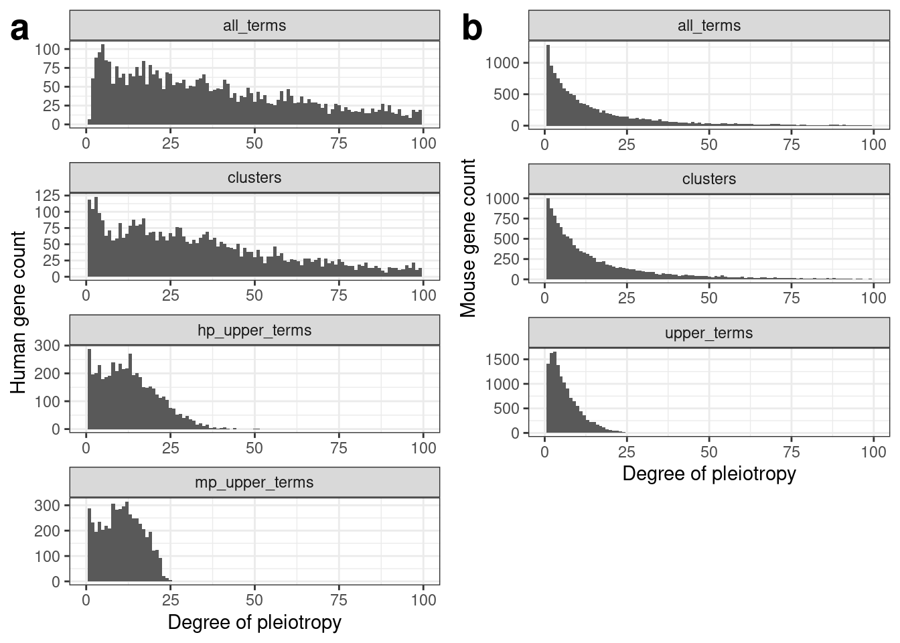
Now we need some summary data regarding the numbers of non-pleiotropic genes as well as the median number of terms per gene.
aggregate(value~variable, human_counts, function(x) sum(x == 1)) variable value
1 all_terms 7
2 clusters 119
3 hp_upper_terms 287
4 mp_upper_terms 287aggregate(value~variable, mouse_counts, function(x) sum(x == 1)) variable value
1 all_terms 1290
2 clusters 1001
3 upper_terms 1409aggregate(value~variable, human_counts, median) variable value
1 all_terms 40
2 clusters 33
3 hp_upper_terms 12
4 mp_upper_terms 11aggregate(value~variable, mouse_counts, median) variable value
1 all_terms 10
2 clusters 10
3 upper_terms 5Now we check the overlap between sets of non-pleiotropic genes when using different ways of pleiotropy definition:
human_clus_np <- na.omit(merged_data$gene_human[merged_data$n_clusters_h == 1])
human_upper_np <- na.omit(merged_data$gene_human[merged_data$HP_high_count == 1])
length(intersect(human_clus_np, human_upper_np))[1] 76mouse_clus_np <- na.omit(merged_data$gene_mouse[merged_data$n_clusters_m == 1])
mouse_upper_np <- na.omit(merged_data$gene_mouse[merged_data$MP_high_count == 1])
length(intersect(mouse_clus_np, mouse_upper_np))[1] 846Given the above data, we can conclude that clustering of terms does not seem beneficial compared to using raw lower-level terms or (especially) upper-level terms.
Now we have to return to the second question of HPO vs. MP, upper-level term counts. Below we will do two main things, i.e.: (i) look into the correlation of term counts, and (ii) look into the overlap of highly pleiotropic gene sets.
ggplot(merged_data, aes(x=HP_high_count_noconvert, y=HP_high_count)) +
geom_hex(bins=15, col='black', lwd=0.3) + theme_bw() +
scale_fill_gradientn(colors=mypal, trans = "log",
breaks=c(1, 10, 100, 1000), name='Gene count') +
theme(panel.grid=element_blank()) +
xlab('HPO upper-level terms') +
ylab('MP upper-level terms')Warning: Removed 23114 rows containing non-finite outside the scale range
(`stat_binhex()`).
# Checking overlaps in highly pleiotropic genes
human_cut_hp <- quantile(na.omit(merged_data$HP_high_count_noconvert), 0.75)
human_cut_mp <- quantile(na.omit(merged_data$HP_high_count), 0.75)
hip_human_hp <- na.omit(merged_data$gene_human[merged_data$HP_high_count_noconvert > human_cut_hp])
hip_human_mp <- na.omit(merged_data$gene_human[merged_data$HP_high_count > human_cut_mp])
print(c(length(hip_human_hp), length(hip_human_mp),
length(intersect(hip_human_hp, hip_human_mp))))[1] 1109 1173 1013Final distributions for all sources
Here, we will plot the distributions of the degree of pleiotropy according to different datasets, and calculate some of the numbers describing the distributions.
Beginning with the distributions:
# Figure 1a - distributions for selected term/GWAS vectors
pdeg_cols <- c('HP_high_count', 'MP_high_count',
'pleio_degree')#, 'pleio_degree_locuswide')
pdeg_dist_data <- merged_data[, pdeg_cols]
source_names <- c('HPO', 'MGD', 'panUKB')#, 'panUKB_all')
names(source_names) = pdeg_cols
colnames(pdeg_dist_data) = source_names
pdeg_dist_data <- na.omit(melt(pdeg_dist_data))No id variables; using all as measure variablespdeg_dist_data$Type = ifelse(grepl('panUKB', pdeg_dist_data$variable),
'complex', 'Mendelian')
pdeg_distros <- ggplot(pdeg_dist_data, aes(x=value, fill=variable)) +
geom_histogram(binwidth = 1, col='black', lwd=0.3) + theme_bw() +
facet_wrap(~variable, nrow=1, scales='free') +
scale_x_continuous(limits=c(0, 25)) +
theme(panel.grid=element_blank(), strip.background=my_ggrect) +
scale_fill_brewer(palette="Accent") +
xlab('Degree of pleiotropy') + ylab('Gene count') +
guides(fill=F)Warning: The `<scale>` argument of `guides()` cannot be `FALSE`. Use "none" instead as
of ggplot2 3.3.4.pdeg_distrosWarning: Removed 1 row containing non-finite outside the scale range
(`stat_bin()`).Warning: Removed 6 rows containing missing values or values outside the scale range
(`geom_bar()`).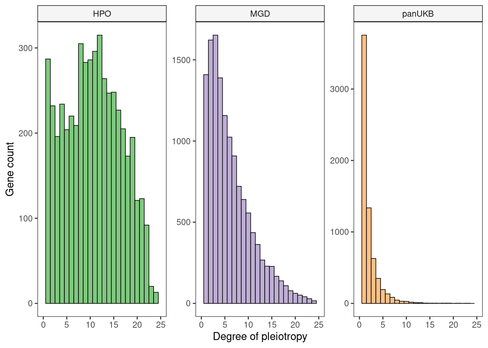
aggregate(value~variable, pdeg_dist_data, median) variable value
1 HPO 11
2 MGD 5
3 panUKB 1And, then, counts of associations per source, as well as some other metrics.
assoc_cnt <- colSums(merged_data[, pdeg_cols], na.rm = T)
print(assoc_cnt)HP_high_count MP_high_count pleio_degree
53406 82715 13932 sum(assoc_cnt)[1] 150053gene_cnt <- colSums(merged_data[, pdeg_cols] > 0, na.rm = T)
print(gene_cnt)HP_high_count MP_high_count pleio_degree
4999 13301 6649 non_pleio_or_missing <- function(x) {
return(sapply(x, function(elt)
ifelse(is.na(elt), TRUE, elt == 1)))
}
have_assoc_all <- sum(merged_data$HP_high_count > 0 &
merged_data$MP_high_count > 0 &
merged_data$pleio_degree > 0, na.rm=T)
print(have_assoc_all)[1] 1236have_assoc_both_dom <- sum((merged_data$HP_high_count > 0 |
merged_data$MP_high_count > 0) &
merged_data$pleio_degree > 0, na.rm=T)
print(have_assoc_both_dom)[1] 3188have_assoc_mono <- sum((merged_data$HP_high_count > 0 |
merged_data$MP_high_count > 0), na.rm=T)
print(have_assoc_mono)[1] 13894pleio_mono <- sum(!non_pleio_or_missing(merged_data$HP_high_count) | !non_pleio_or_missing(merged_data$MP_high_count), na.rm=T)
print(pleio_mono)[1] 12654# How many are pleiotropic in pan-UKB, but have no HPO/MGD
pleio_puk_notinmono <- sum(is.na(merged_data$HP_high_count) &
is.na(merged_data$MP_high_count) &
merged_data$pleio_degree > 1, na.rm=T)
print(pleio_puk_notinmono)[1] 1307# How many are uniquely pleiotropic in domains
pleio_mono_nopuk <- sum(
(!non_pleio_or_missing(merged_data$HP_high_count) |
!non_pleio_or_missing(merged_data$MP_high_count)) &
non_pleio_or_missing(merged_data$pleio_degree), na.rm=T)
print(pleio_mono_nopuk)[1] 11163print(pleio_mono_nopuk/pleio_mono)[1] 0.8821716pleio_puk_nomono <- sum(
(non_pleio_or_missing(merged_data$HP_high_count) &
non_pleio_or_missing(merged_data$MP_high_count)) &
!non_pleio_or_missing(merged_data$pleio_degree),
na.rm=T
)
print(pleio_puk_nomono)[1] 1404print(pleio_puk_nomono/sum(!non_pleio_or_missing(merged_data$pleio_degree)))[1] 0.4849741# Proportion of HPO and MGD pleiotropic that are not
# pleiotropic in pan-UKBSN - distributions for different ways of GWAS data processing
Below, we will draw two plots to compare the dgree of genic pleitoropy in pan-UKB data when using different ways of preprocessing the data (closest gene vs. all genes) or different sets of triats (clustered traits or max. independent trait set).
sn2_data <- na.omit(melt(merged_data[, c('pleio_degree', 'pleio_degree_locuswide')]))No id variables; using all as measure variablessn2_distros <- ggplot(sn2_data, aes(x=value, fill=variable)) +
geom_histogram(binwidth = 1, col='black', lwd=0.3) + theme_bw() +
facet_wrap(~variable, nrow=2, scales='free') +
scale_x_continuous(limits=c(0, 25)) +
theme(panel.grid=element_blank(), strip.background=my_ggrect) +
scale_fill_brewer(palette="Set2") +
xlab('Degree of pleiotropy') + ylab('Gene count') +
guides(fill=F)
sn2_distrosWarning: Removed 16 rows containing non-finite outside the scale range
(`stat_bin()`).Warning: Removed 4 rows containing missing values or values outside the scale range
(`geom_bar()`).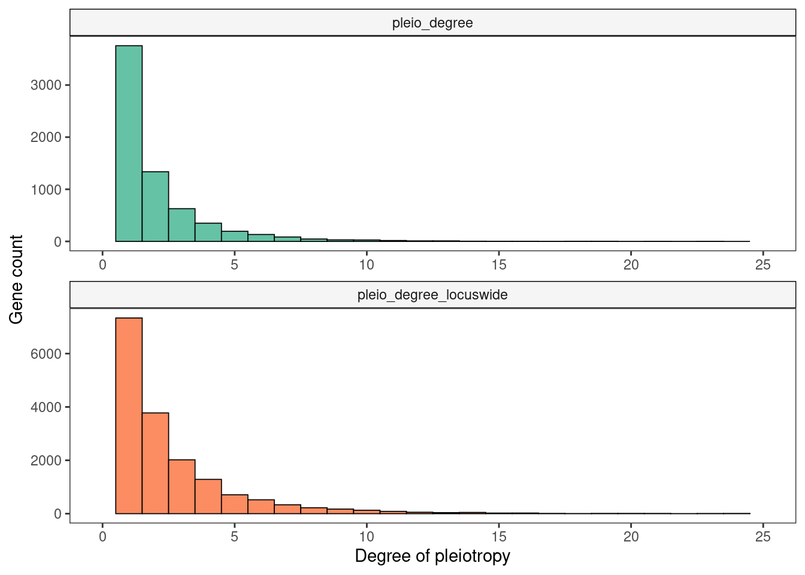
# Counts
table(merged_data$pleio_degree > 0)
TRUE
6649 table(merged_data$pleio_degree == 1)/sum(merged_data$pleio_degree > 0, na.rm = T)
FALSE TRUE
0.4354038 0.5645962 table(merged_data$pleio_degree_locuswide > 0)
TRUE
16839 table(merged_data$pleio_degree_locuswide == 1)/sum(merged_data$pleio_degree_locuswide > 0, na.rm = T)
FALSE TRUE
0.5644041 0.4355959 # Comparison of distributions for max.indep for SN2.1
sn3_data <- na.omit(melt(merged_data[, c('pleio_degree', 'pleio_degree_maxindep')]))No id variables; using all as measure variablessn3_distros <- ggplot(sn3_data, aes(x=value, fill=variable)) +
geom_histogram(binwidth = 1, col='black', lwd=0.3) + theme_bw() +
facet_wrap(~variable, nrow=2, scales='free') +
scale_x_continuous(limits=c(0, 25)) +
theme(panel.grid=element_blank(), strip.background=my_ggrect) +
scale_fill_brewer(palette="Set3") +
xlab('Degree of pleiotropy') + ylab('Gene count') +
guides(fill=F)
sn3_distrosWarning: Removed 1 row containing non-finite outside the scale range (`stat_bin()`).
Removed 4 rows containing missing values or values outside the scale range
(`geom_bar()`).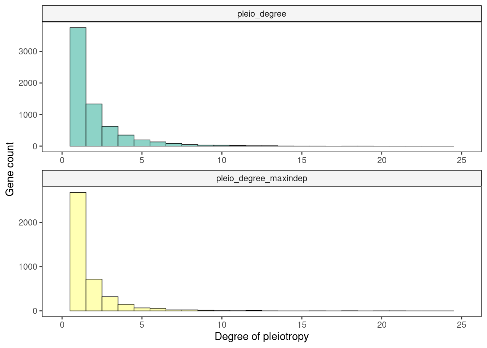
sum(merged_data$pleio_degree, na.rm=T)[1] 13932sum(merged_data$pleio_degree_maxindep, na.rm=T)[1] 7092mean(merged_data$pleio_degree, na.rm=T)[1] 2.095353mean(merged_data$pleio_degree_maxindep, na.rm=T)[1] 1.74165table(merged_data$pleio_degree > 1)
FALSE TRUE
3754 2895 table(merged_data$pleio_degree_maxindep > 1)
FALSE TRUE
2679 1393 cor.test(merged_data$pleio_degree, merged_data$pleio_degree_maxindep,
use="complete.obs", method="spearman")Warning in cor.test.default(merged_data$pleio_degree,
merged_data$pleio_degree_maxindep, : Cannot compute exact p-value with ties
Spearman's rank correlation rho
data: merged_data$pleio_degree and merged_data$pleio_degree_maxindep
S = 4.229e+09, p-value < 2.2e-16
alternative hypothesis: true rho is not equal to 0
sample estimates:
rho
0.6241946 Correlation analysis
Below, we construct a single plot to evaluate correlations between the genic degree of pleiotropy across our data.
pdeg_scat_df <- data.frame(col_a=NA, col_b=NA, val_a=NA, val_b=NA)
pdeg_corrs <- data.frame(col_a=NA, col_b=NA, val_a=NA, val_b=NA, rval=NA, pval=NA)
for (i in pdeg_cols) {
for (j in pdeg_cols) {
if (i == j){
next
}
df_snippet <- data.frame(col_a = source_names[i],
col_b = source_names[j],
val_a = merged_data[, i],
val_b = merged_data[, j])
pdeg_scat_df = na.omit(rbind(pdeg_scat_df, df_snippet))
cor_test_res <- cor.test(merged_data[, i], merged_data[, j],
use="complete.obs", method='spearman')
pdeg_corrs <- na.omit(rbind(pdeg_corrs,
data.frame(col_a = source_names[i],
col_b = source_names[j],
val_a = 30, val_b = 30,
rval = round(cor_test_res$estimate, digits=2),
pval = cor_test_res$p.value)))
}
}Warning in data.frame(col_a = source_names[i], col_b = source_names[j], : row
names were found from a short variable and have been discardedWarning in cor.test.default(merged_data[, i], merged_data[, j], use =
"complete.obs", : Cannot compute exact p-value with tiesWarning in data.frame(col_a = source_names[i], col_b = source_names[j], : row
names were found from a short variable and have been discardedWarning in cor.test.default(merged_data[, i], merged_data[, j], use =
"complete.obs", : Cannot compute exact p-value with tiesWarning in data.frame(col_a = source_names[i], col_b = source_names[j], : row
names were found from a short variable and have been discardedWarning in cor.test.default(merged_data[, i], merged_data[, j], use =
"complete.obs", : Cannot compute exact p-value with tiesWarning in data.frame(col_a = source_names[i], col_b = source_names[j], : row
names were found from a short variable and have been discardedWarning in cor.test.default(merged_data[, i], merged_data[, j], use =
"complete.obs", : Cannot compute exact p-value with tiesWarning in data.frame(col_a = source_names[i], col_b = source_names[j], : row
names were found from a short variable and have been discardedWarning in cor.test.default(merged_data[, i], merged_data[, j], use =
"complete.obs", : Cannot compute exact p-value with tiesWarning in data.frame(col_a = source_names[i], col_b = source_names[j], : row
names were found from a short variable and have been discardedWarning in cor.test.default(merged_data[, i], merged_data[, j], use =
"complete.obs", : Cannot compute exact p-value with tiespdeg_scatters <- ggplot(pdeg_scat_df, aes(x=val_a, y=val_b)) +
geom_hex(bins=15, col='black', lwd=0.3) + theme_bw() +
geom_text(data=pdeg_corrs, aes(label=rval), size = 3) +
facet_grid(vars(col_a), vars(col_b)) +
scale_x_continuous(limits=c(0, 33)) +
scale_y_continuous(limits=c(0, 33)) +
scale_fill_gradientn(colors=mypal, trans = "log",
breaks=c(1, 10, 100, 1000), name='Gene count') +
theme(panel.grid=element_blank(),
strip.background = my_ggrect) +
xlab('Degree of pleiotropy (dataset A)') +
ylab('Degree of pleiotropy (dataset B)')
pdeg_scattersWarning: Removed 73 rows containing missing values or values outside the scale range
(`geom_hex()`).
# Adjusted p-values
p.adjust(unique(pdeg_corrs$pval), method='fdr')[1] 9.016189e-80 9.075826e-02 5.860877e-06Overlap of pleiotropic gene sets
First, we calculate the generic overlap between the datasets.
table(!(is.na(merged_data$pleio_degree_locuswide)) &
!(is.na(merged_data$HP_high_count)))
FALSE TRUE
25908 2205 table(!(is.na(merged_data$pleio_degree)) &
!(is.na(merged_data$HP_high_count)))
FALSE TRUE
26771 1342 Next, we collect sets of all pleiotropic genes for all datasets, including those analyzed for SN.
pleio_genes_hpo <- na.omit(merged_data$gene_human[merged_data$HP_high_count > 1])
mouse_gene_4venn <- ifelse(is.na(merged_data$gene_human) |
merged_data$gene_human == "",
merged_data$gene_mouse, merged_data$gene_human)
pleio_genes_mgd <- na.omit(mouse_gene_4venn[merged_data$MP_high_count > 1])
pleio_genes_puk <- na.omit(merged_data$gene_human[merged_data$pleio_degree > 1])
pleio_genes_pukall <- na.omit(merged_data$gene_human[merged_data$pleio_degree_locuswide > 1])
pleio_genes_pukmi <- na.omit(merged_data$gene_human[merged_data$pleio_degree_maxindep > 1])
venn_pleio <- ggvenn(list('HPO' = pleio_genes_hpo, 'MGD' = pleio_genes_mgd,
'panUKB' = pleio_genes_puk),#,
# 'panUKB_all' = pleio_genes_pukall),
set_name_size = 4, text_size=3, stroke_size=0.3,
fill_color=brewer.pal(4, 'Accent'),
show_percentage=FALSE)
venn_pleio
# Venns for SN2
sn2_venn_pleio <- ggvenn(list('closest' = pleio_genes_puk,
'locus-wide' = pleio_genes_pukall),
set_name_size = 4, text_size=3, stroke_size=0.3,
fill_color=brewer.pal(2, 'Set2'),
show_percentage=FALSE)Warning in brewer.pal(2, "Set2"): minimal value for n is 3, returning requested palette with 3 different levelssn2_venn_pleio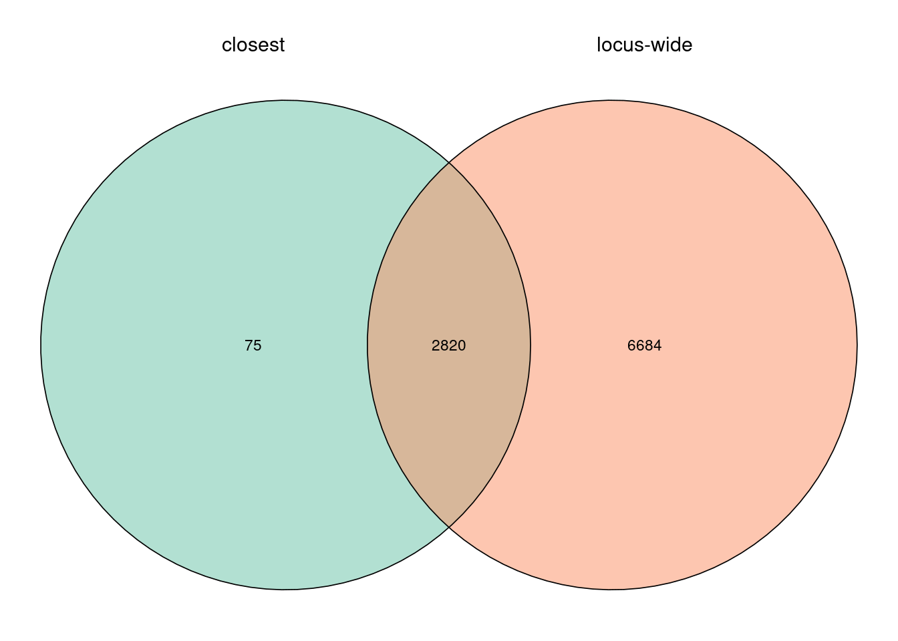
# Venn for SN3
sn3_venn_pleio <- ggvenn(list('clusters' = pleio_genes_puk,
'max_indep_set' = pleio_genes_pukmi),
set_name_size = 4, text_size=3, stroke_size=0.3,
fill_color=brewer.pal(2, 'Set3'),
show_percentage=FALSE)Warning in brewer.pal(2, "Set3"): minimal value for n is 3, returning requested palette with 3 different levelssn3_venn_pleio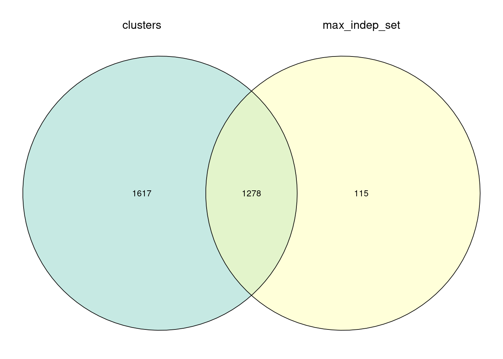
Next, we turn to investigating the highly pleiotropic genes. We apply the 4th quartile rule to detect the highly pleiotropic genes irrespective of the actual distribution of the degrees of pleiotropy.
hip_cut_hpo = quantile(na.omit(merged_data$HP_high_count), 0.75)
hip_cut_mgd = quantile(na.omit(merged_data$MP_high_count), 0.75)
hip_cut_puk = quantile(na.omit(merged_data$pleio_degree), 0.75)
hip_cut_pukall = quantile(na.omit(merged_data$pleio_degree_locuswide), 0.75)
hip_cut_pukmi = quantile(na.omit(merged_data$pleio_degree_maxindep), 0.75)
hip_genes_hpo <- na.omit(merged_data$gene_human[merged_data$HP_high_count > hip_cut_hpo])
hip_genes_mgd <- na.omit(mouse_gene_4venn[merged_data$MP_high_count > hip_cut_mgd])
hip_genes_puk <- na.omit(merged_data$gene_human[merged_data$pleio_degree > hip_cut_puk])
hip_genes_pukall <- na.omit(merged_data$gene_human[merged_data$pleio_degree_locuswide > hip_cut_pukall])
hip_genes_pukmi <- na.omit(merged_data$gene_human[merged_data$pleio_degree_maxindep > hip_cut_pukmi])
# Percentage of shared highly pleiotropic genes
hip_hpo_or_mgd <- union(hip_genes_hpo, hip_genes_mgd)
length(intersect(hip_hpo_or_mgd, hip_genes_puk))/length(hip_hpo_or_mgd)[1] 0.1024505And then make Venn diagrams for the highly pleiotropic genes similar to those for all pleiotropic genes.
venn_hip <- ggvenn(list('HPO' = hip_genes_hpo, 'MGD' = hip_genes_mgd,
'panUKB' = hip_genes_puk),
# 'panUKB_all' = hip_genes_pukall),
set_name_size = 4, text_size=3, stroke_size=0.3,
fill_color=brewer.pal(4, 'Accent'),
show_percentage=FALSE)
venn_hip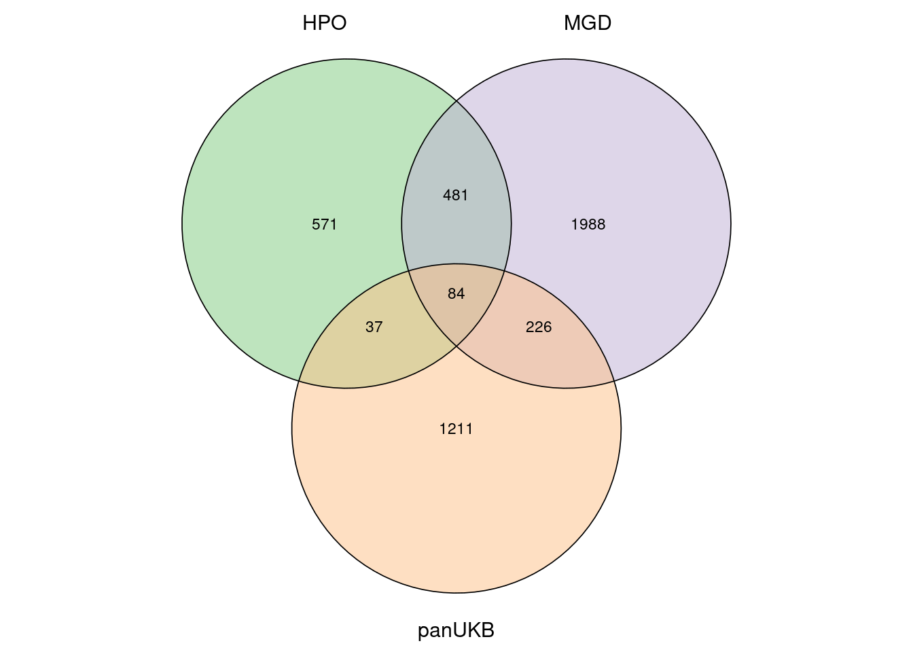
# Highly pleiotropic gene venn diagram for SN2
sn2_venn_hip <- ggvenn(list('closest' = hip_genes_puk,
'locus-wide' = hip_genes_pukall),
set_name_size = 4, text_size=3, stroke_size=0.3,
fill_color=brewer.pal(2, 'Set2'),
show_percentage=FALSE)Warning in brewer.pal(2, "Set2"): minimal value for n is 3, returning requested palette with 3 different levelssn2_venn_hip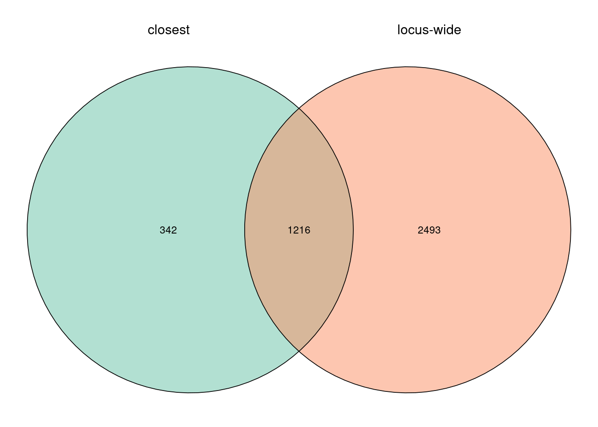
# Highly pleiotropic gene venn diagram for SN3
sn3_venn_hip <- ggvenn(list('clusters' = hip_genes_puk,
'max_indep_set' = hip_genes_pukmi),
set_name_size = 4, text_size=3, stroke_size=0.3,
fill_color=brewer.pal(2, 'Set3'),
show_percentage=FALSE)Warning in brewer.pal(2, "Set3"): minimal value for n is 3, returning requested palette with 3 different levelssn3_venn_hip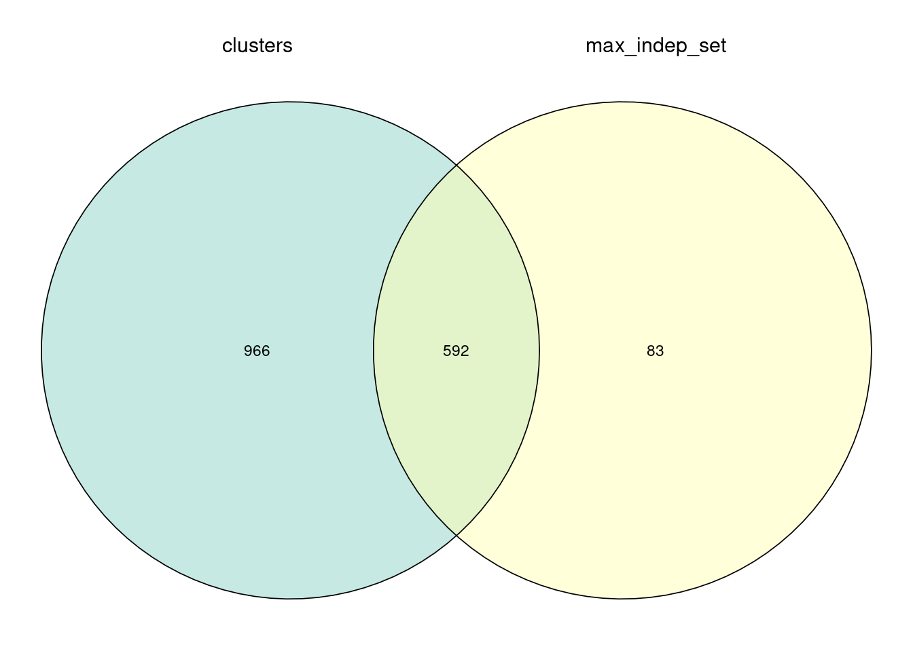
Exporting figures with descriptive stats
In this chunk, we construct the plots that contain all panels for Figures 1, SN2.1, SN3.1. We hide the results of these chunks for ease of comprehension of the Qmd file.
# Main figure 1c-d
both_venn <- plot_grid(venn_pleio, venn_hip, labels=c('c', 'd'),
nrow=2, label_size = 20)
# Venns for Figure SN2.1
sn2_venns <- plot_grid(sn2_venn_pleio, sn2_venn_hip,
nrow=1, labels=c('b', 'c'), label_size=20)
# FVenns for igure SN3.1
sn3_venns <- plot_grid(sn3_venn_pleio, sn3_venn_hip,
nrow=1, labels=c('b', 'c'), label_size=20)
# Figure 1 --- 9 * 9
plot_grid(plot_grid(pdeg_distros, pdeg_scatters, nrow=2,
rel_heights = c(0.4, 1),
labels=c('a', 'b'), label_size=20),
both_venn, nrow=1,
rel_widths = c(1, 0.35), labels=c('', ''),
label_size = 20)# Figure SN2.1
plot_grid(sn2_distros, sn2_venns, nrow=2, labels=c('a', ''),
label_size=20, rel_heights = c(1, 0.7))# Figure SN3.1
plot_grid(sn3_distros, sn3_venns, nrow=2, labels=c('a', ''),
label_size=20, rel_heights = c(1, 0.7))Comparison of gene features
Necessary data manipulations
In this block, we will explore various features of genes depending on their degree of pleiotropy. To do so, we will need to first assign the groups of pleiotropy according to the 4th quartile rule described above.
merged_data$pleiotropy_HPO = factor(ifelse(merged_data$HP_high_count > 1,
ifelse(merged_data$HP_high_count > hip_cut_hpo, 'high', 'moderate'), 'none'),
levels = c('none', 'moderate', 'high'))
merged_data$pleiotropy_MGD = factor(ifelse(merged_data$MP_high_count > 1,
ifelse(merged_data$MP_high_count > hip_cut_mgd, 'high', 'moderate'), 'none'),
levels = c('none', 'moderate', 'high'))
merged_data$pleiotropy_panUKB = factor(ifelse(merged_data$pleio_degree > 1,
ifelse(merged_data$pleio_degree > hip_cut_puk, 'high', 'moderate'), 'none'),
levels = c('none', 'moderate', 'high'))
merged_data$pleiotropy_panUKB_all = factor(ifelse(merged_data$pleio_degree_locuswide > 1,
ifelse(merged_data$pleio_degree_locuswide > hip_cut_pukall, 'high', 'moderate'), 'none'),
levels = c('none', 'moderate', 'high'))
merged_data$pleiotropy_panUKB_maxindep = factor(ifelse(merged_data$pleio_degree_maxindep > 1,
ifelse(merged_data$pleio_degree > hip_cut_pukmi, 'high', 'moderate'), 'none'),
levels = c('none', 'moderate', 'high'))Next, we construct the plot of proportions of genes in different groups (for Extended Data Figure 1).
# Supplementary S1 - making the plot of gene proportions
group_props <- as.numeric(table(merged_data$pleiotropy_HPO))
group_props <- group_props/sum(group_props)
for (src_name in c(source_names[2:3])) {
curr_props <- as.numeric(table(merged_data[, paste0('pleiotropy_', src_name)]))
curr_props <- curr_props/sum(curr_props)
group_props <- rbind(group_props, curr_props)
}
group_props <- as.data.frame(group_props)
colnames(group_props) <- c('none', 'moderate', 'high')
group_props$dataset <- source_names
ggplot(melt(group_props, id.vars='dataset'), aes(x=dataset,
y=value, fill=variable)) +
geom_bar(stat='identity', col='black') + theme_bw() +
theme(panel.grid=element_blank(),
axis.text.x = element_text(angle=45, hjust=1)) +
xlab('Data source') + ylab('Gene proportion') +
scale_fill_brewer(palette="BuPu")
Finally, we make a master function to plot all features we may want to, with the following imaportant args:
axis_lab, ax_lim, log_scale- regulating the axis properties on plots [beware - axis limit is applied before plotting];mouse_feature- specification of a separate column for the value of the feature in mice (if this is different from the main feature column);gwas_data_file- filename to use for GWAS locus-level data;cutoff, cut_name- parameters for creating binary plots with a cutoff value to be used for splitting feature into categories;use_maxindep, use_locuswide- arguments that, if set, override the set of columns used for analysis, juxtaposing the main (closest gene, clustered data) dataset against the selected one.
plot_feature <- function(feature_name, axis_lab, ax_lim=NA, log_scale=FALSE,
mouse_feature=NA, gwas_data_file=NA,
cutoff=NA, cut_name=NA,
use_maxindep=FALSE, use_locuswide=FALSE) {
if (use_maxindep) {
source_names <- c('panUKB', 'panUKB_maxindep')
} else if (use_locuswide) {
source_names <- c('panUKB', 'panUKB_all')
}
pl_col_names <- paste0('pleiotropy_', source_names)
feat_df <- merged_data[, c(feature_name, pl_col_names)]
feat_df <- na.omit(melt(feat_df, id.vars=feature_name))
colnames(feat_df) <- c('feature', 'dataset', 'group')
feat_df$dataset = sapply(as.character(feat_df$dataset),
function(x) strsplit(x, 'py_')[[1]][2])
if (!is.na(mouse_feature)) {
# Removing mouse data
feat_df <- feat_df[feat_df$dataset != 'MGD', ]
mouse_snippet <- na.omit(data.frame(feature=merged_data[, mouse_feature],
dataset='MGD',
group=merged_data$pleiotropy_MGD))
feat_df <- as.data.frame(rbind(feat_df, mouse_snippet))
}
feat_df$group = factor(as.character(feat_df$group),
levels=c('none', 'moderate', 'high'))
if (!is.na(gwas_data_file)) {
gwas_values = read.table(gwas_data_file, sep='\t', header=T)
feat_df <- gwas_values
colnames(feat_df) <- c('group', 'feature')
feat_df$group = factor(as.character(feat_df$group),
levels=c('none', 'moderate', 'high'))
feat_df$dataset <- 'panUKB (locus-wise)'
source_names <- 'panUKB (locus-wise)'
}
summary_df <- aggregate(feature~group+dataset, feat_df, median)
summary_df$pvalue = NA
for (src_name in source_names) {
for (tg_group in c('moderate', 'high')) {
wtres <- wilcox.test(feature~group, feat_df[feat_df$dataset == src_name &
feat_df$group %in% c('none', tg_group), ])
summary_df[summary_df$dataset == src_name &
summary_df$group == tg_group, 'pvalue'] = wtres$p.value
}
}
summary_df$pvalue = p.adjust(summary_df$pvalue, method='fdr')
print_sum_df <- summary_df
if (is.na(ax_lim)) {
ax_lim = max(feat_df$feature)
} else {
feat_df <- feat_df[feat_df$feature <= ax_lim, ]
}
if (log_scale) {
line_shift <- ax_lim
} else {
line_shift = ax_lim/10
}
line_data <- data.frame(dataset=rep(source_names, each=4),
group=rep(c('none', 'moderate', 'none', 'high'),
length(source_names)),
feature = rep(c(ax_lim + line_shift, ax_lim + line_shift,
ax_lim + 2.5 * line_shift, ax_lim + 2.5 * line_shift),
length(source_names)),
line_cat = rep(c(1, 1, 2, 2), length(source_names)))
summary_df$plot_label = ifelse(summary_df$pvalue < 0.05,
ifelse(summary_df$pvalue < 0.01,
ifelse(summary_df$pvalue < 0.001, '***', '**'), '*'),
'n.s.')
summary_df$feature = rep(c(NA, ax_lim + 1.75 * line_shift,
ax_lim + 3.25 * line_shift), length(source_names))
# Shifting the asterisks a little
summary_df$feature = ifelse(summary_df$plot_label == "n.s.",
summary_df$feature + 0.05 * line_shift,
summary_df$feature - 0.25 * line_shift)
out_plt <- ggplot(feat_df, aes(x=group, y=feature, fill=group)) +
geom_violin(scale = "width") + theme_bw() +
theme(panel.grid = element_blank(), strip.background = my_ggrect) +
geom_boxplot(outlier.shape=NA, width=0.25, col='black', fill='white') +
geom_line(data=line_data, aes(group=line_cat)) +
geom_text(data=summary_df[summary_df$group == 'moderate', ],
aes(label=plot_label), nudge_x=-0.5) +
geom_text(data=summary_df[summary_df$group == 'high', ],
aes(label=plot_label), nudge_x=-1) +
ylab(axis_lab) + xlab('Pleiotropy group') +
facet_wrap(~dataset, nrow=1) + guides(fill=F) +
scale_fill_brewer(palette='BuPu') +
scale_y_continuous(limits=c(0, ax_lim * 1.4))
if (log_scale) {
out_plt <- out_plt + scale_y_log10()
}
if (!is.na(cutoff)) {
cutoff_stats <- aggregate(feature~group+dataset, feat_df, function(x)
table(x > cutoff)/length(x))
chisq_pvals <- c()
for (src_name in source_names) {
ds_df <- aggregate(feature~group, feat_df[feat_df$dataset == src_name &
feat_df$group %in% c('none', 'high'), ], function(x) table(x > cutoff))
chisq_pvals <- c(chisq_pvals, chisq.test(ds_df$feature)$p.value)
}
cutoff_stats$no <- cutoff_stats$feature[, 1]
cutoff_stats$yes <- cutoff_stats$feature[, 2]
cutoff_stats <- cutoff_stats[, c(1, 2, 4, 5)]
print(cutoff_stats)
names(chisq_pvals) = source_names
print(chisq_pvals)
cutoff_df <- melt(cutoff_stats, measure.vars=c('no', 'yes'),
id.vars=c('group', 'dataset'))
prop_plot <- ggplot(cutoff_df, aes(x=group, y=value, fill=variable)) +
geom_bar(stat='identity', col='black') + theme_bw() +
xlab('Pleiotropy group') + ylab('Proportion of genes') +
facet_wrap(~dataset, ncol=4) +
# coord_flip() +
# facet_wrap(~dataset, nrow=4) +
scale_fill_brewer(palette="OrRd", name=cut_name) +
theme(strip.background = my_ggrect,
panel.grid = element_blank(),
legend.position = 'top',
axis.text.x=element_text(angle=45, hjust=1))
return(prop_plot)
} else {
print(print_sum_df)
return(out_plt)
}
}Expression level analysis
Here, we work with several major summary statistics of the expression data according to the GTEx data: (i) mean or median expression across tissues; (ii) maximum expression across tissues; and (iii) number of tissues with detectable (> 5 TPM) expression.
count_plot <- plot_feature('count_exp', 'Number of tissues') group dataset feature pvalue
1 none HPO 4 NA
2 moderate HPO 20 1.402725e-14
3 high HPO 30 1.365130e-21
4 none MGD 14 NA
5 moderate MGD 18 4.247981e-02
6 high MGD 27 3.132382e-10
7 none panUKB 3 NA
8 moderate panUKB 5 3.301445e-03
9 high panUKB 9 2.350018e-10print(count_plot)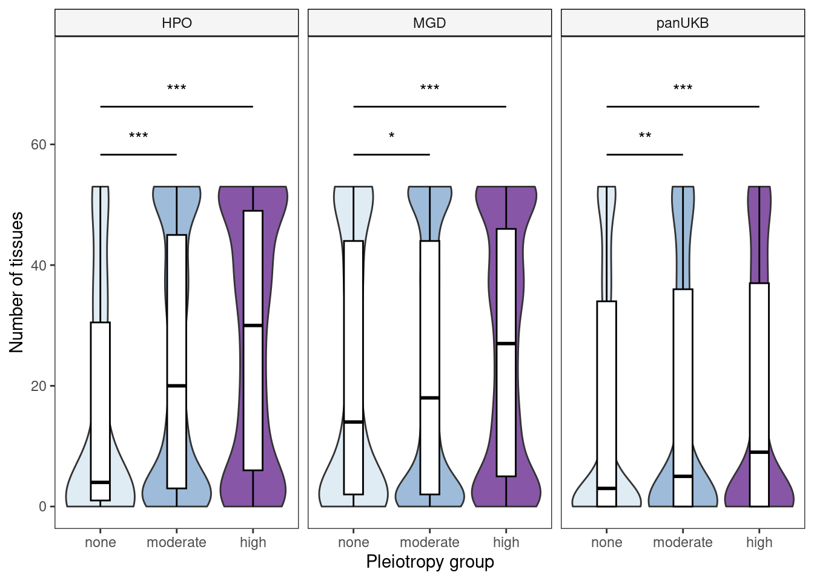
# Additional plots for supplementary information
median_plot <- plot_feature('median_exp', 'Median TPM', 100) group dataset feature pvalue
1 none HPO 1.456920 NA
2 moderate HPO 8.126970 2.634813e-14
3 high HPO 11.291900 2.318760e-24
4 none MGD 6.429845 NA
5 moderate MGD 7.302270 1.210310e-01
6 high MGD 10.091550 6.026550e-12
7 none panUKB 1.511925 NA
8 moderate panUKB 2.458080 7.741982e-04
9 high panUKB 4.113065 6.026550e-12print(median_plot)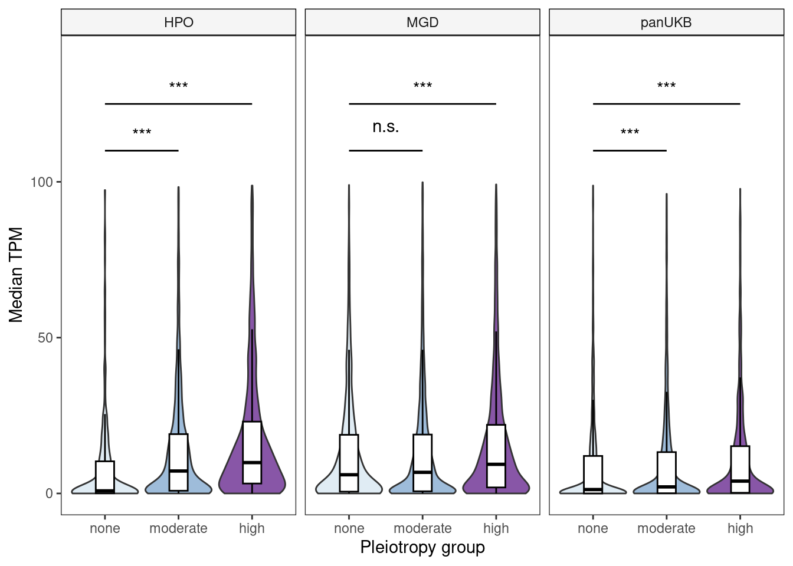
mean_plot <- plot_feature('mean_exp', 'Mean TPM', 100) group dataset feature pvalue
1 none HPO 5.093295 NA
2 moderate HPO 12.754541 7.420115e-14
3 high HPO 14.251538 7.896658e-19
4 none MGD 10.098887 NA
5 moderate MGD 11.327107 2.041048e-03
6 high MGD 13.967338 4.888883e-14
7 none panUKB 3.964699 NA
8 moderate panUKB 5.511277 9.613684e-04
9 high panUKB 7.388683 3.557039e-13print(mean_plot)
max_plot <- plot_feature('max_exp', 'Max. TPM across tissues', 500) group dataset feature pvalue
1 none HPO 36.47840 NA
2 moderate HPO 54.97700 5.819882e-06
3 high HPO 55.25420 3.665608e-06
4 none MGD 43.30230 NA
5 moderate MGD 52.40920 5.819882e-06
6 high MGD 56.75015 5.893575e-12
7 none panUKB 22.20375 NA
8 moderate panUKB 28.37405 4.250960e-04
9 high panUKB 36.32205 2.452488e-13print(max_plot)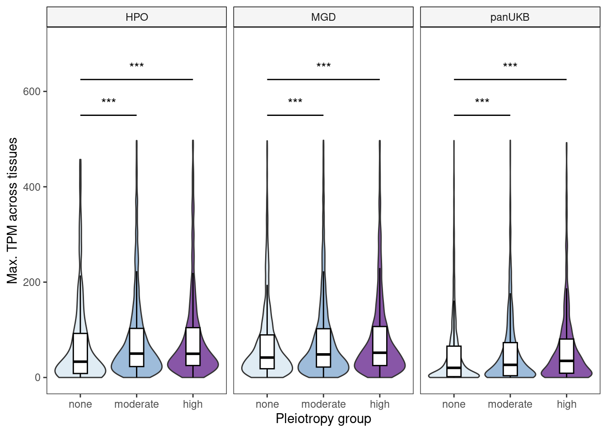
plot_grid(median_plot, mean_plot, max_plot, nrow=3, labels=c('a', 'b', 'c'),
label_size=20)PPI and dosage sensitivity measures
In this section, we plot BIOGRID PPI counts and dosage sensitivity values from Collins et al., 2022.
# PPI count
ppi_plot <- plot_feature('n_interactions', 'PPI count', ax_lim = 200) group dataset feature pvalue
1 none HPO 42.5 NA
2 moderate HPO 77.0 2.995998e-08
3 high HPO 127.0 1.568844e-26
4 none MGD 45.0 NA
5 moderate MGD 63.0 2.535619e-07
6 high MGD 101.0 2.588423e-43
7 none panUKB 63.0 NA
8 moderate panUKB 68.0 2.421352e-01
9 high panUKB 68.5 3.271614e-01print(ppi_plot)
# Collin et al., 2022 - pHaplo and pTriplo
phaplo_plot <- plot_feature('pHaplo', 'pHaplo') group dataset feature pvalue
1 none HPO 0.3940 NA
2 moderate HPO 0.5500 1.038795e-05
3 high HPO 0.6230 1.717107e-08
4 none MGD 0.3970 NA
5 moderate MGD 0.4880 2.252063e-11
6 high MGD 0.7180 5.160259e-75
7 none panUKB 0.4810 NA
8 moderate panUKB 0.5315 1.611097e-03
9 high panUKB 0.5770 5.459135e-08print(phaplo_plot)
ptriplo_plot <- plot_feature('pTriplo', 'pTriplo') group dataset feature pvalue
1 none HPO 0.397 NA
2 moderate HPO 0.483 3.401672e-04
3 high HPO 0.541 2.059738e-07
4 none MGD 0.381 NA
5 moderate MGD 0.438 2.718627e-07
6 high MGD 0.600 9.493411e-49
7 none panUKB 0.431 NA
8 moderate panUKB 0.477 5.977485e-02
9 high panUKB 0.490 2.605045e-04print(ptriplo_plot)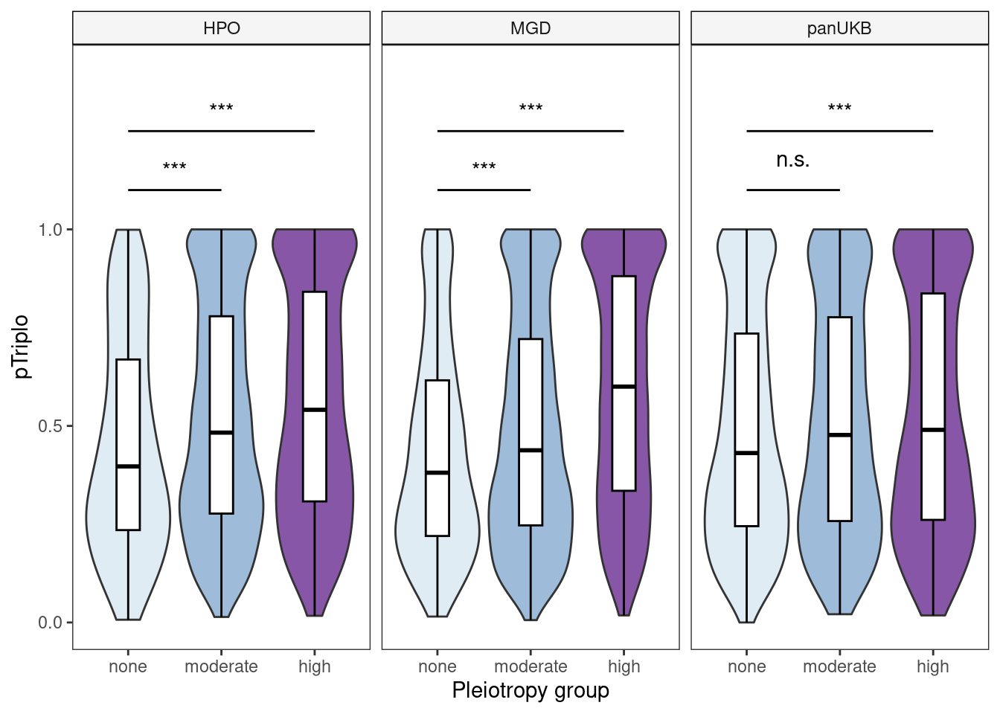
SN - plots of expression and PPI counts
Here, we plot the same features (number of tissues and the number of protein-protein interactors) for the max-indep and locus-wide pan-UKB data. These plots then go to SN2.2 and SN3.2
count_plot_mi <- plot_feature('count_exp', 'Number of tissues',
use_maxindep = TRUE) group dataset feature pvalue
1 none panUKB 3.0 NA
2 moderate panUKB 5.0 3.668273e-03
3 high panUKB 9.0 4.700035e-10
4 none panUKB_maxindep 4.0 NA
5 moderate panUKB_maxindep 3.5 5.488585e-01
6 high panUKB_maxindep 9.0 7.466943e-05print(count_plot_mi)
count_plot_lw <- plot_feature('count_exp', 'Number of tissues',
use_locuswide = TRUE) group dataset feature pvalue
1 none panUKB 3 NA
2 moderate panUKB 5 2.751204e-03
3 high panUKB 9 1.566678e-10
4 none panUKB_all 0 NA
5 moderate panUKB_all 1 4.854705e-12
6 high panUKB_all 2 1.706286e-35print(count_plot_lw)
ppi_plot_mi <- plot_feature('n_interactions', 'PPI count',
use_maxindep = TRUE, ax_lim=200) group dataset feature pvalue
1 none panUKB 63.0 NA
2 moderate panUKB 68.0 0.4362152
3 high panUKB 68.5 0.4362152
4 none panUKB_maxindep 66.0 NA
5 moderate panUKB_maxindep 63.0 0.7625887
6 high panUKB_maxindep 72.0 0.4362152print(ppi_plot_mi)
ppi_plot_lw <- plot_feature('n_interactions', 'PPI count',
use_locuswide = TRUE, ax_lim=200) group dataset feature pvalue
1 none panUKB 63.0 NA
2 moderate panUKB 68.0 0.2690390794
3 high panUKB 68.5 0.3271614223
4 none panUKB_all 55.0 NA
5 moderate panUKB_all 58.0 0.2690390794
6 high panUKB_all 65.0 0.0002560042print(ppi_plot_lw)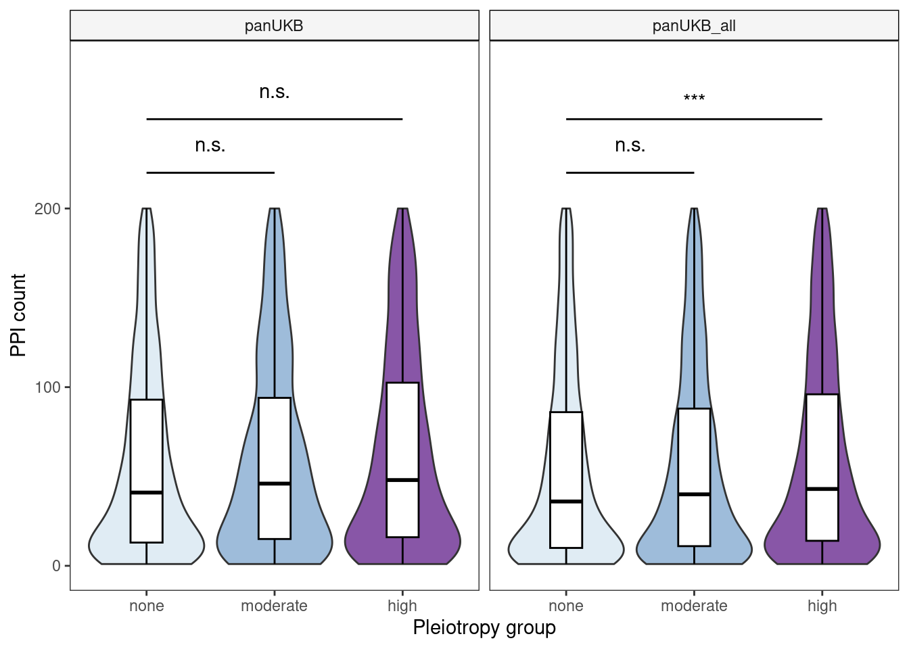
GO term counts per gene
In this section, we make plots with GO term counts. To construct such plots, we define a funciton for annotating genes with term counts, and then run the annotation prior to plotting the results.
add_count <- function(column_name, gotab_df, ont_name, gene_col='gene_human') {
cnt_vec <- table(gotab_df[gotab_df$ONTOLOGY == ont_name, 'SYMBOL'])
merged_data[, column_name] = sapply(merged_data[, gene_col], function(x)
cnt_vec[x])
return(merged_data)
}
merged_data <- add_count('gobp_cnt_human', human_gotab, 'BP')
merged_data <- add_count('gomf_cnt_human', human_gotab, 'MF')
merged_data <- add_count('gocc_cnt_human', human_gotab, 'CC')
merged_data <- add_count('gobp_cnt_mouse', mouse_gotab, 'BP', gene_col='gene_mouse')
merged_data <- add_count('gomf_cnt_mouse', mouse_gotab, 'MF', gene_col='gene_mouse')
merged_data <- add_count('gocc_cnt_mouse', mouse_gotab, 'CC', gene_col='gene_mouse')
gobp_plot <- plot_feature('gobp_cnt_human', 'GO BP count', ax_lim=50,
mouse_feature = 'gobp_cnt_mouse') group dataset feature pvalue
1 none HPO 6.5 NA
2 moderate HPO 8.0 3.562672e-04
3 high HPO 10.0 1.368270e-13
4 none MGD 4.0 NA
5 moderate MGD 7.0 7.513510e-78
6 high MGD 16.0 1.000965e-286
7 none panUKB 6.0 NA
8 moderate panUKB 7.0 1.557990e-01
9 high panUKB 8.0 6.174089e-07print(gobp_plot)
gomf_plot <- plot_feature('gomf_cnt_human', 'GO MF count', ax_lim=50,
mouse_feature = 'gomf_cnt_mouse') group dataset feature pvalue
1 none HPO 4 NA
2 moderate HPO 5 2.464275e-04
3 high HPO 6 1.971476e-12
4 none MGD 3 NA
5 moderate MGD 5 5.142912e-31
6 high MGD 8 1.201897e-159
7 none panUKB 4 NA
8 moderate panUKB 4 6.345944e-01
9 high panUKB 5 5.679261e-08print(gomf_plot)
gocc_plot <- plot_feature('gocc_cnt_human', 'GO CC count', ax_lim=50,
mouse_feature = 'gocc_cnt_mouse') group dataset feature pvalue
1 none HPO 5.0 NA
2 moderate HPO 6.0 5.224356e-04
3 high HPO 7.0 1.752513e-13
4 none MGD 4.0 NA
5 moderate MGD 5.0 1.276869e-32
6 high MGD 8.0 3.622835e-113
7 none panUKB 5.0 NA
8 moderate panUKB 5.0 8.234485e-01
9 high panUKB 5.5 9.862957e-03print(gocc_plot)
Besides, we plot the GO biological process term counts for other variants of the pan-UKB GWAS data (for SN2/3 figures):
gobp_plot_mi <- plot_feature('gobp_cnt_human', 'GO BP count',
use_maxindep = TRUE, ax_lim=50) group dataset feature pvalue
1 none panUKB 6 NA
2 moderate panUKB 7 2.077320e-01
3 high panUKB 8 1.646424e-06
4 none panUKB_maxindep 7 NA
5 moderate panUKB_maxindep 7 9.704026e-01
6 high panUKB_maxindep 8 6.992070e-05print(gobp_plot_mi)
gobp_plot_lw <- plot_feature('gobp_cnt_human', 'GO BP count',
use_locuswide = TRUE, ax_lim=50) group dataset feature pvalue
1 none panUKB 6 NA
2 moderate panUKB 7 1.557990e-01
3 high panUKB 8 1.646424e-06
4 none panUKB_all 5 NA
5 moderate panUKB_all 6 1.557990e-01
6 high panUKB_all 6 9.064580e-06print(gobp_plot_lw)
And a plot for Extended Data (hidden from Qmd output).
# Extended Data Figure 3
plot_grid(gocc_plot, gomf_plot, nrow=2, labels=c('a', 'b'))# Figure 2 -- 8 * 7 (portrait)
plot_grid(count_plot, ppi_plot, gobp_plot, phaplo_plot,
ncol=1, labels=c('a', 'b', 'c', 'd'), label_size = 20)GO term enrichment analysis
Basic enrichment testing
Here, we run the enrichment using the clusterProfiler package, without setting the universe (i.e., running against all genes in the genome). We run the analysis using only highly-pleiotropic gene subset.
First, we define function for running the enrichment:
# Conveniences for EA
make_enrichment_plot <- function(gene_list, orgdb_name,
ontology, plot_title,
data_source="PO",
use_t2g=FALSE,
t2g_df=NA) {
if (use_t2g) {
ego <- enricher(gene = gene_list,
TERM2GENE = t2g_df,
pvalueCutoff = 0.05,
pAdjustMethod = "BH",
maxGSSize = 2500)
} else {
ego <- enrichGO(gene = gene_list,
OrgDb = orgdb_name,
keyType = "SYMBOL",
ont = ontology,
pvalueCutoff = 0.05,
pAdjustMethod = "BH",
maxGSSize = 2500,
readable = TRUE)
}
go_res_plot <- dotplot(ego, showCategory=10, title=plot_title)
write.csv(ego, file = paste0(data_source, '_', orgdb_name, "_", ontology, ".csv"),
row.names = FALSE)
return(list('df' = as.data.frame(ego), 'plot' = go_res_plot))
}And then apply the function to gene sets:
# Human
human_bp <- make_enrichment_plot(hip_genes_hpo, "org.Hs.eg.db", 'BP',
'Biological process (human)')
print(human_bp$plot)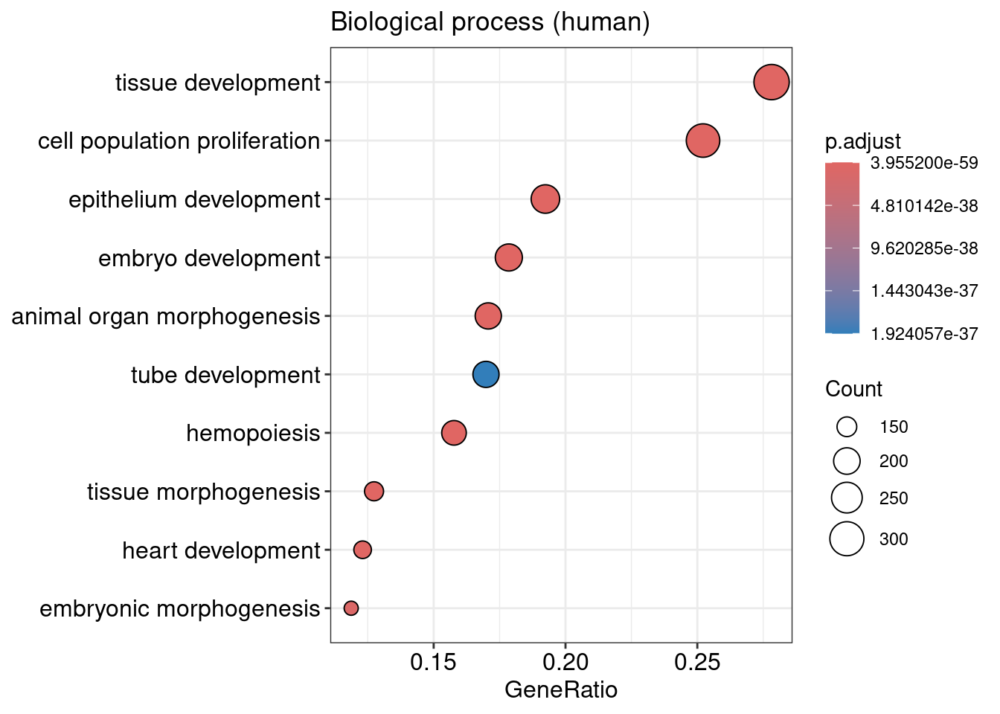
human_mf <- make_enrichment_plot(hip_genes_hpo, "org.Hs.eg.db", 'MF',
'Molecular functoin (human)')
print(human_mf$plot)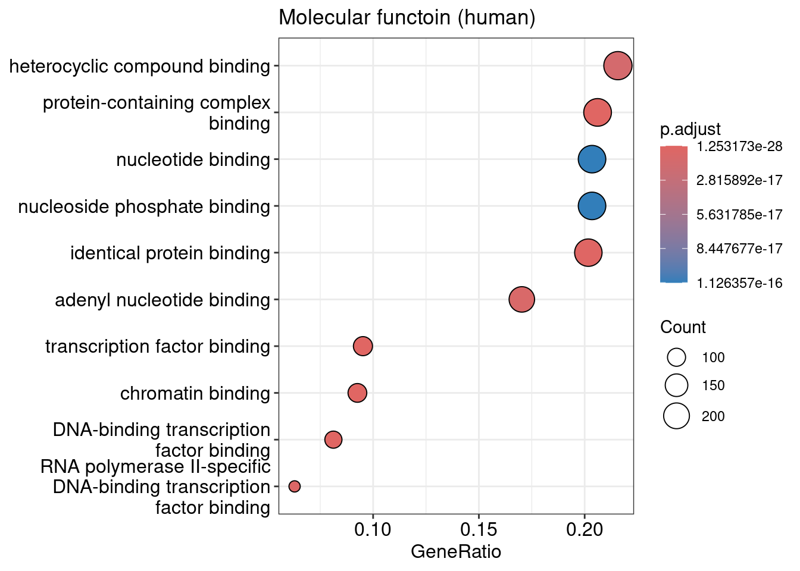
human_cc <- make_enrichment_plot(hip_genes_hpo, "org.Hs.eg.db", 'CC',
'Cellular component (human)')
print(human_cc$plot)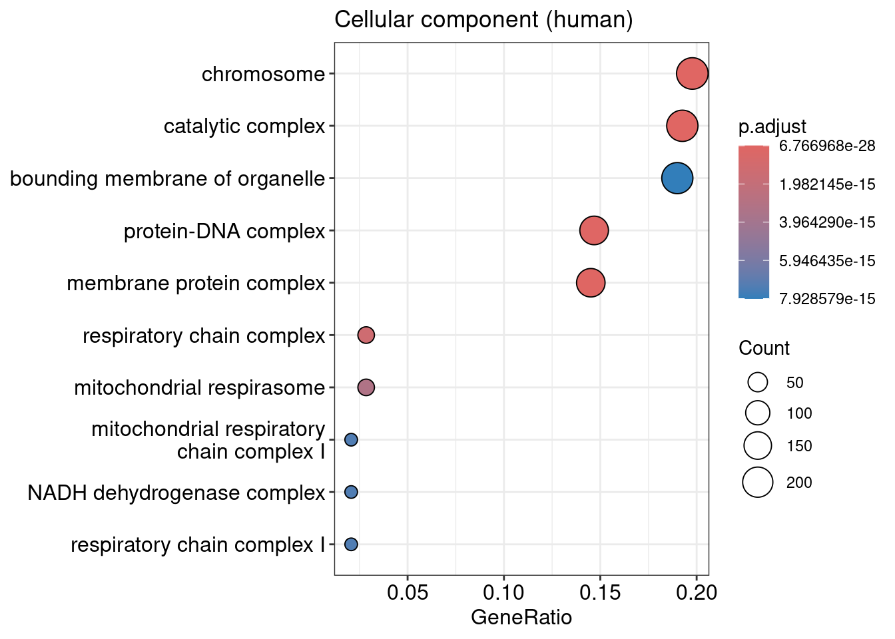
# Molecular function enrichment with all HPO genes
all_hpo_genes <- merged_data[!is.na(merged_data$pleiotropy_HPO),
'gene_human']
all_hpo_mf <- make_enrichment_plot(all_hpo_genes, 'org.Hs.eg.db', 'MF',
'Molecular function (all HPO genes')
print(all_hpo_mf$plot)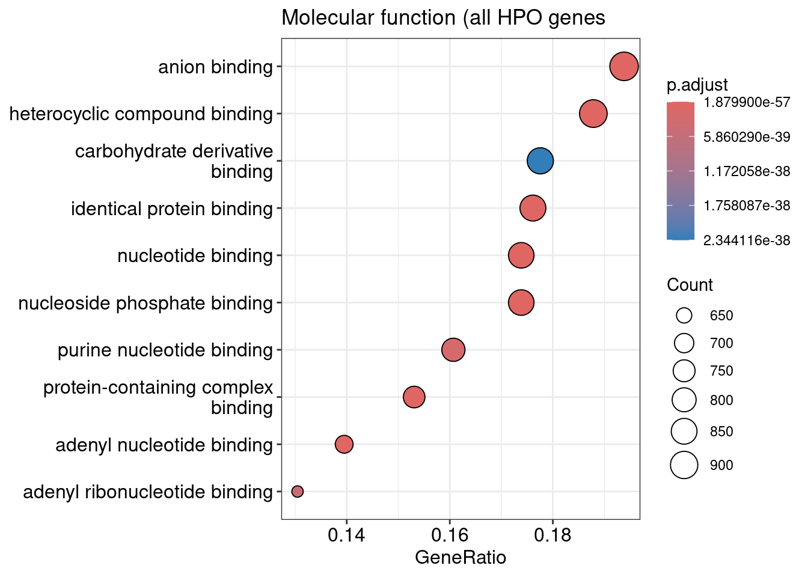
all_hpo_tf <- all_hpo_mf$df[grepl('transcription factor',
all_hpo_mf$df$Description), ]
hip_hpo_tf <- human_mf$df[grepl('transcription factor',
human_mf$df$Description), ]
# Checking using 'DNA binding
all_hpo_dnab <- all_hpo_mf$df[grepl('DNA binding',
all_hpo_mf$df$Description), ]
hip_hpo_dnab <- human_mf$df[grepl('DNA binding',
human_mf$df$Description), ]
# Mouse
hip_genes_mgd_mm <- na.omit(merged_data$gene_mouse[merged_data$MP_high_count > hip_cut_mgd])
mouse_bp <- make_enrichment_plot(hip_genes_mgd_mm, "org.Mm.eg.db", 'BP',
'Biological process (mouse)')
print(mouse_bp$plot)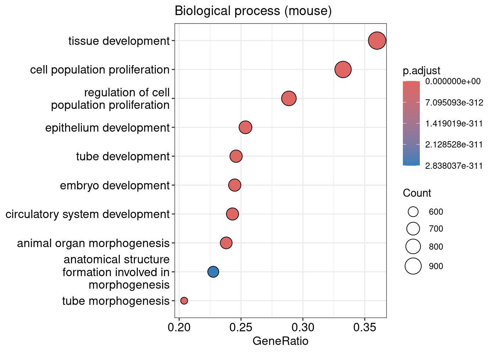
mouse_mf <- make_enrichment_plot(hip_genes_mgd_mm, "org.Mm.eg.db", 'MF',
'Molecular functoin (mouse)')
print(mouse_mf$plot)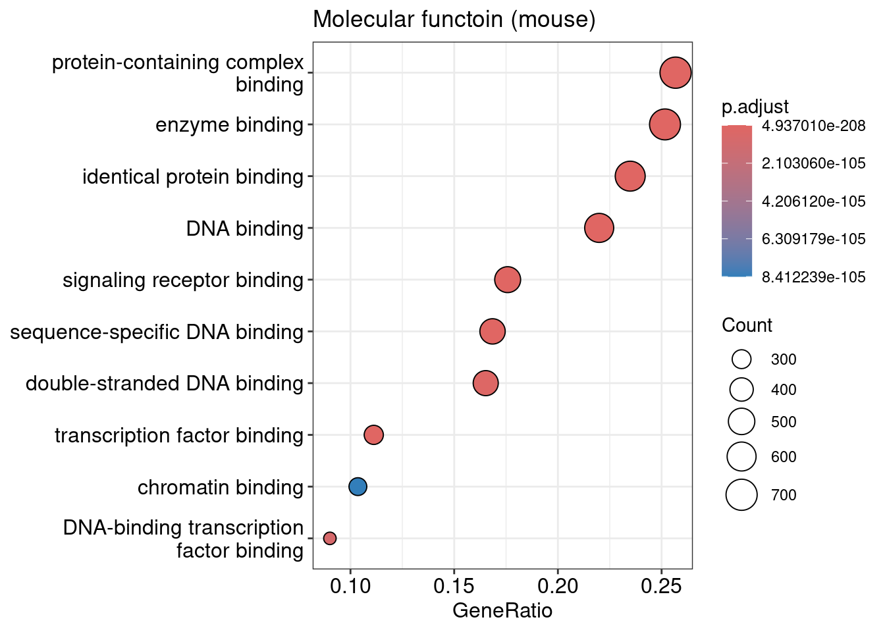
mouse_cc <- make_enrichment_plot(hip_genes_mgd_mm, "org.Mm.eg.db", 'CC',
'Cellular component (mouse))')
print(mouse_cc$plot)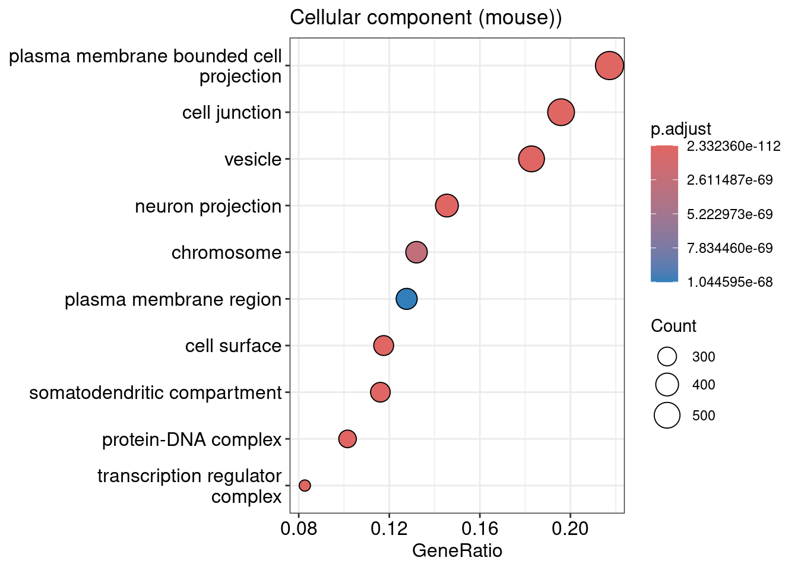
# Figures S5-S7 (8 * 10 each)
plot_grid(human_bp$plot, mouse_bp$plot, nrow=2, labels=c('a', 'b'), label_size = 20)plot_grid(human_mf$plot, mouse_mf$plot, nrow=2, labels=c('a', 'b'), label_size = 20)plot_grid(human_cc$plot, mouse_cc$plot, nrow=2, labels=c('a', 'b'), label_size = 20)The same for pan-UKB data (we separate it from the rest because we should bear in mind that GSEA in GWAS may be biased by linkage disequilibrium).
# panUKB analysis - undestandably flawed, but still important
puk_bp <- make_enrichment_plot(hip_genes_puk, "org.Hs.eg.db", 'BP',
'Biological process (human)', data_source = "GWAS")
print(puk_bp$plot)
puk_mf <- make_enrichment_plot(hip_genes_puk, "org.Hs.eg.db", 'MF',
'Molecular functoin (human)', data_source = "GWAS")
print(puk_mf$plot)
puk_cc <- make_enrichment_plot(hip_genes_puk, "org.Hs.eg.db", 'CC',
'Cellular component (human)', data_source = "GWAS")
print(puk_cc$plot)
# Figure S8
plot_grid(puk_bp$plot, puk_cc$plot, puk_mf$plot, nrow=3, labels=c('a', 'b', 'c'), label_size=22)Hallmark and canonical pathway analysis
Data retrieval and filtering
In this section, we endeavor to run the same EA framework but using the canonical pathway gene sets. We will run it in the two following ways:
Using hallmark (H) gene sets
Using the canonical pathway (CP) dataset;
Constructing the maximum independent set of pathways in an iterative algorithm
First, let’s get the data from MSigDB using the msigdbrfunctions:
# Hallmarks
hallmark_human_t2g = msigdbr(species = "human",
category = "H") %>%
dplyr::distinct(gs_name, gene_symbol) %>%
as.data.frame()
hallmark_mouse_t2g = msigdbr(species = "mouse",
category = "H") %>%
dplyr::distinct(gs_name, gene_symbol) %>%
as.data.frame()
cp_human_t2g = msigdbr(species = "human", category = "C2") %>%
dplyr::filter(gs_subcat != 'CGP') %>%
dplyr::distinct(gs_name, gene_symbol) %>%
as.data.frame()
cp_mouse_t2g = msigdbr(species = "mouse", category = "C2") %>%
dplyr::filter(gs_subcat != 'CGP') %>%
dplyr::distinct(gs_name, gene_symbol) %>%
as.data.frame()Raw H and CP testing
Now, we run the plain EA using the hallmarks:
human_hall <- make_enrichment_plot(hip_genes_hpo, "MSigDB",
"H", 'Hallmarks (human)', use_t2g = TRUE,
t2g_df=hallmark_human_t2g)
print(human_hall$plot)
mouse_hall <- make_enrichment_plot(hip_genes_mgd_mm, "MSigDB",
"H", 'Hallmarks (mouse)', use_t2g = TRUE,
t2g_df=hallmark_mouse_t2g)
print(mouse_hall$plot)
puk_hall <- make_enrichment_plot(hip_genes_puk, "MSigDB",
"H", 'Hallmarks (GWAS)', use_t2g = TRUE,
t2g_df=hallmark_human_t2g,
data_source = "GWAS")
print(puk_hall$plot)
There are virtually no overlapping enriched gene sets, except for the HALLMARK UV RESPONSE DN. The overall number of enriched sets is below 10 for all sources except MGD. Hence, let’s proceed to the CP.
human_cp <- make_enrichment_plot(hip_genes_hpo, "MSigDB",
"CP", 'Canonical pathways (human)', use_t2g = TRUE,
t2g_df=cp_human_t2g)
print(human_cp$plot)
mouse_cp <- make_enrichment_plot(hip_genes_mgd_mm, "MSigDB",
"CP", 'Canonical pathways (mouse)', use_t2g = TRUE,
t2g_df=cp_mouse_t2g)
print(mouse_cp$plot)
puk_cp <- make_enrichment_plot(hip_genes_puk, "MSigDB",
"CP", 'Canonical pathways (GWAS)', use_t2g = TRUE,
t2g_df=cp_human_t2g,
data_source = "GWAS")
print(puk_cp$plot)
Some additional code for the figure export:
# Additional figure with hallmark sets
plot_grid(human_hall$plot, mouse_hall$plot, puk_hall$plot,
nrow=3, labels=c('a', 'b', 'c'), label_size=22)# Additional figure with canonical pathways sets
plot_grid(human_cp$plot, mouse_cp$plot, puk_cp$plot,
nrow=3, labels=c('a', 'b', 'c'), label_size=22)Independent large pathways
Now let’s try constructing the maximum independent set of CP pathways. To do so, we will do the following:
- Compute the number of genes per pathway;
- Take the largest one by the total gene count;
- Subtract genes belonging to the pathway in (2), return to step (1).
- Repeat until a certain number or fraction of genes are covered
max_indep_gs <- function(t2g_df, gene_cutoff=15000,
increment_cutoff=50) {
next_iteration = TRUE
indep_gs_set <- c()
seen_genes <- c()
while (next_iteration) {
gs_gene_counts = table(t2g_df$gs_name)
largest_gs <- names(gs_gene_counts)[which.max(gs_gene_counts)]
largest_gs_genes <- t2g_df[t2g_df$gs_name == largest_gs,
'gene_symbol']
seen_genes <- c(seen_genes, largest_gs_genes)
indep_gs_set <- c(indep_gs_set, largest_gs)
print(paste(largest_gs, length(largest_gs_genes),
length(indep_gs_set), length(seen_genes), sep=' '))
t2g_df <- t2g_df[!(t2g_df$gene_symbol %in% largest_gs_genes), ]
if (length(seen_genes) >= gene_cutoff ||
nrow(t2g_df) == 0 ||
length(largest_gs_genes) < increment_cutoff) {
break
}
}
return(indep_gs_set)
}
indep_cp_human <- max_indep_gs(cp_human_t2g,
increment_cutoff = 25)[1] "REACTOME_POST_TRANSLATIONAL_PROTEIN_MODIFICATION 1434 1 1434"
[1] "REACTOME_RNA_POLYMERASE_II_TRANSCRIPTION 1149 2 2583"
[1] "NABA_MATRISOME 885 3 3468"
[1] "REACTOME_INNATE_IMMUNE_SYSTEM 785 4 4253"
[1] "REACTOME_DEVELOPMENTAL_BIOLOGY 652 5 4905"
[1] "REACTOME_METABOLISM_OF_LIPIDS 555 6 5460"
[1] "REACTOME_TRANSPORT_OF_SMALL_MOLECULES 536 7 5996"
[1] "REACTOME_SIGNALING_BY_GPCR 484 8 6480"
[1] "KEGG_OLFACTORY_TRANSDUCTION 371 9 6851"
[1] "REACTOME_METABOLISM_OF_RNA 364 10 7215"
[1] "REACTOME_SIGNALING_BY_RHO_GTPASES_MIRO_GTPASES_AND_RHOBTB3 349 11 7564"
[1] "REACTOME_VESICLE_MEDIATED_TRANSPORT 291 12 7855"
[1] "REACTOME_ADAPTIVE_IMMUNE_SYSTEM 250 13 8105"
[1] "REACTOME_NEURONAL_SYSTEM 230 14 8335"
[1] "REACTOME_CELL_CYCLE 220 15 8555"
[1] "REACTOME_METABOLISM_OF_AMINO_ACIDS_AND_DERIVATIVES 214 16 8769"
[1] "REACTOME_CYTOKINE_SIGNALING_IN_IMMUNE_SYSTEM 200 17 8969"
[1] "REACTOME_TRANSLATION 169 18 9138"
[1] "REACTOME_CELLULAR_RESPONSES_TO_STIMULI 159 19 9297"
[1] "WP_CILIOPATHIES 153 20 9450"
[1] "REACTOME_METABOLISM_OF_CARBOHYDRATES 147 21 9597"
[1] "REACTOME_THE_CITRIC_ACID_TCA_CYCLE_AND_RESPIRATORY_ELECTRON_TRANSPORT 128 22 9725"
[1] "REACTOME_BIOLOGICAL_OXIDATIONS 125 23 9850"
[1] "REACTOME_HEMOSTASIS 123 24 9973"
[1] "REACTOME_METABOLISM_OF_VITAMINS_AND_COFACTORS 113 25 10086"
[1] "WP_MALIGNANT_PLEURAL_MESOTHELIOMA 113 26 10199"
[1] "REACTOME_DNA_REPAIR 96 27 10295"
[1] "WP_ALZHEIMERS_DISEASE_AND_MIRNA_EFFECTS 94 28 10389"
[1] "WP_VEGFAVEGFR2_SIGNALING_PATHWAY 92 29 10481"
[1] "REACTOME_CHROMATIN_MODIFYING_ENZYMES 89 30 10570"
[1] "REACTOME_SENSORY_PERCEPTION 80 31 10650"
[1] "REACTOME_METABOLISM_OF_NUCLEOTIDES 78 32 10728"
[1] "WP_IL18_SIGNALING_PATHWAY 67 33 10795"
[1] "REACTOME_PROTEIN_LOCALIZATION 59 34 10854"
[1] "WP_MESODERMAL_COMMITMENT_PATHWAY 56 35 10910"
[1] "REACTOME_MUSCLE_CONTRACTION 55 36 10965"
[1] "REACTOME_DISEASES_OF_SIGNAL_TRANSDUCTION_BY_GROWTH_FACTOR_RECEPTORS_AND_SECOND_MESSENGERS 53 37 11018"
[1] "WP_CILIARY_LANDSCAPE 49 38 11067"
[1] "REACTOME_CELL_CELL_COMMUNICATION 48 39 11115"
[1] "WP_MALE_INFERTILITY 48 40 11163"
[1] "REACTOME_SIGNALING_BY_RECEPTOR_TYROSINE_KINASES 45 41 11208"
[1] "WP_22Q112_COPY_NUMBER_VARIATION_SYNDROME 42 42 11250"
[1] "WP_CIRCADIAN_RHYTHM_GENES 40 43 11290"
[1] "WP_NUCLEAR_RECEPTORS_METAPATHWAY 40 44 11330"
[1] "WP_PARKINSONS_DISEASE_PATHWAY 39 45 11369"
[1] "WP_ECTODERM_DIFFERENTIATION 36 46 11405"
[1] "REACTOME_ORGANELLE_BIOGENESIS_AND_MAINTENANCE 34 47 11439"
[1] "REACTOME_EXTRACELLULAR_MATRIX_ORGANIZATION 32 48 11471"
[1] "REACTOME_SIGNALING_BY_WNT 28 49 11499"
[1] "WP_MRNA_PROCESSING 28 50 11527"
[1] "WP_PREIMPLANTATION_EMBRYO 27 51 11554"
[1] "KEGG_ENDOCYTOSIS 26 52 11580"
[1] "REACTOME_INOSITOL_PHOSPHATE_METABOLISM 26 53 11606"
[1] "REACTOME_MAPK_FAMILY_SIGNALING_CASCADES 26 54 11632"
[1] "WP_MIRNAS_INVOLVED_IN_DNA_DAMAGE_RESPONSE 26 55 11658"
[1] "KEGG_HUNTINGTONS_DISEASE 23 56 11681"cp_indep_human_t2g <- cp_human_t2g[cp_human_t2g$gs_name %in%
indep_cp_human, ]
cp_indep_mouse_t2g <- cp_mouse_t2g[cp_mouse_t2g$gs_name %in%
indep_cp_human, ]Following the construction of this set of pathways, we now run the EA against it:
human_indepcp <- make_enrichment_plot(hip_genes_hpo, "MSigDB",
"CPindep", 'CP-independent (human)', use_t2g = TRUE,
t2g_df=cp_indep_human_t2g)
print(human_indepcp$plot)
mouse_indepcp <- make_enrichment_plot(hip_genes_mgd_mm, "MSigDB",
"CPindep", 'CP-independent (mouse)', use_t2g = TRUE,
t2g_df=cp_indep_mouse_t2g)
print(mouse_indepcp$plot)
puk_indepcp <- make_enrichment_plot(hip_genes_puk, "MSigDB",
"CPindep", 'CP-independent (GWAS)', use_t2g = TRUE,
t2g_df=cp_indep_human_t2g,
data_source = "GWAS")
print(puk_indepcp$plot)
We can also calculate the proportion of gene sets out of the constructed list that have a significant enrichment, and find out the common ones.
nrow(human_indepcp$df)[1] 32nrow(mouse_indepcp$df)[1] 32nrow(puk_indepcp$df)[1] 14intersect(intersect(human_indepcp$df$ID, mouse_indepcp$df$ID),
puk_indepcp$df$ID)[1] "REACTOME_DISEASES_OF_SIGNAL_TRANSDUCTION_BY_GROWTH_FACTOR_RECEPTORS_AND_SECOND_MESSENGERS"
[2] "REACTOME_SIGNALING_BY_RECEPTOR_TYROSINE_KINASES"
[3] "REACTOME_CYTOKINE_SIGNALING_IN_IMMUNE_SYSTEM"
[4] "WP_MALIGNANT_PLEURAL_MESOTHELIOMA"
[5] "WP_VEGFAVEGFR2_SIGNALING_PATHWAY"
[6] "REACTOME_MAPK_FAMILY_SIGNALING_CASCADES"
[7] "REACTOME_EXTRACELLULAR_MATRIX_ORGANIZATION"
[8] "REACTOME_HEMOSTASIS" Evaluating overlap of enriched terms
Next, we use the results of GSEA obtained above to evaluate the overlap between the sets of enriched terms (in each of the GO branches).
# Analysis of similarity of results between data types (HPO vs. pan-UKB)
common_bp <- intersect(human_bp$df$ID, puk_bp$df$ID)
length(common_bp)[1] 1104length(common_bp)/min(nrow(human_bp$df), nrow(puk_bp$df))[1] 0.7976879common_mf <- intersect(human_mf$df$ID, puk_mf$df$ID)
length(common_mf)[1] 73length(common_mf)/min(nrow(human_mf$df), nrow(puk_mf$df))[1] 0.5common_cc <- intersect(human_cc$df$ID, puk_cc$df$ID)
length(common_cc)[1] 48length(common_cc)/min(nrow(human_cc$df), nrow(puk_cc$df))[1] 0.6575342venn_terms_bp <- ggvenn(list('HPO' = human_bp$df$ID,
'MGD' = mouse_bp$df$ID,
'panUKB' = puk_bp$df$ID),
set_name_size = 4, text_size=3, stroke_size=0.3,
fill_color=brewer.pal(3, 'Accent'),
show_percentage=FALSE)
venn_terms_cc <- ggvenn(list('HPO' = human_cc$df$ID,
'MGD' = mouse_cc$df$ID,
'panUKB' = puk_cc$df$ID),
set_name_size = 4, text_size=3, stroke_size=0.3,
fill_color=brewer.pal(3, 'Accent'),
show_percentage=FALSE)
venn_terms_mf <- ggvenn(list('HPO' = human_mf$df$ID,
'MGD' = mouse_mf$df$ID,
'panUKB' = puk_mf$df$ID),
set_name_size = 4, text_size=3, stroke_size=0.3,
fill_color=brewer.pal(3, 'Accent'),
show_percentage=FALSE)
# 6 * 6
plot_grid(venn_terms_bp, venn_terms_cc, NULL, NULL, venn_terms_mf, NULL,
nrow=3, labels=c('a', 'b', '', '', 'c', ''),
rel_heights = c(1, 0.2, 1))
Now we want to test if the overlap is mainly driven by genes that are highly pleiotropic in both datasets. To test for this, we need to construct sets of highly pleiotropic genes that are unique to each data source (trait domain, i.e. we treat HPO and MGD as a single source).
# Unique gene enrichment
hip_puk_no_mono <- na.omit(merged_data[merged_data$pleiotropy_panUKB == 'high' &
is.na(merged_data$HP_high_count) &
is.na(merged_data$MP_high_count), 'gene_human'])
hip_hpo_no_puk <- na.omit(merged_data[merged_data$pleiotropy_HPO == 'high' &
is.na(merged_data$pleio_degree), 'gene_human'])
hip_mgd_no_puk <- na.omit(merged_data[merged_data$pleiotropy_MGD == 'high' &
is.na(merged_data$pleio_degree), 'gene_mouse'])
# HPO unique
hpouq_bp <- make_enrichment_plot(hip_hpo_no_puk, "org.Hs.eg.db", 'BP',
'Biological process (HPO unique)', data_source = "POUQ")
hpouq_mf <- make_enrichment_plot(hip_hpo_no_puk, "org.Hs.eg.db", 'MF',
'Molecular function (HPO unique)', data_source = "POUQ")
hpouq_cc <- make_enrichment_plot(hip_hpo_no_puk, "org.Hs.eg.db", 'CC',
'Cellular component (HPO unique)', data_source = "POUQ")
# Mouse unique
mgduq_bp <- make_enrichment_plot(hip_mgd_no_puk, "org.Mm.eg.db", 'BP',
'Biological process (MGD unique)', data_source = "POUQ")
mgduq_cc <- make_enrichment_plot(hip_mgd_no_puk, "org.Mm.eg.db", 'CC',
'Cellular component (MGD unique)', data_source = "POUQ")
mgduq_mf <- make_enrichment_plot(hip_mgd_no_puk, "org.Mm.eg.db", 'MF',
'Molecular function (MGD unique)', data_source = "POUQ")
# pan-UKB unique
pukuq_bp <- make_enrichment_plot(hip_puk_no_mono, "org.Hs.eg.db", 'BP',
'Biological process (pan-UKB unique)', data_source = "POUQ")
pukuq_mf <- make_enrichment_plot(hip_puk_no_mono, "org.Hs.eg.db", 'MF',
'Molecular function (pan-UKB unique)', data_source = "POUQ")
pukuq_cc <- make_enrichment_plot(hip_puk_no_mono, "org.Hs.eg.db", 'CC',
'Cellular component (pan-UKB unique)', data_source = "POUQ")
venn_terms_bpuq <- ggvenn(list('HPO' = hpouq_bp$df$ID,
'MGD' = mgduq_bp$df$ID,
'panUKB' = pukuq_bp$df$ID),
set_name_size = 4, text_size=3, stroke_size=0.3,
fill_color=brewer.pal(3, 'Accent'),
show_percentage=FALSE)
venn_terms_ccuq <- ggvenn(list('HPO' = hpouq_cc$df$ID,
'MGD' = mgduq_cc$df$ID,
'panUKB' = pukuq_cc$df$ID),
set_name_size = 4, text_size=3, stroke_size=0.3,
fill_color=brewer.pal(3, 'Accent'),
show_percentage=FALSE)
venn_terms_mfuq <- ggvenn(list('HPO' = hpouq_mf$df$ID,
'MGD' = mgduq_mf$df$ID,
'panUKB' = pukuq_mf$df$ID),
set_name_size = 4, text_size=3, stroke_size=0.3,
fill_color=brewer.pal(3, 'Accent'),
show_percentage=FALSE)
# 6 * 6
plot_grid(venn_terms_bpuq, venn_terms_ccuq,
NULL, NULL, venn_terms_mfuq, NULL,
nrow=3, labels=c('a', 'b', '', '', 'c', ''),
rel_heights = c(1, 0.2, 1))
As we can see, the enrichment in pan-UKB data basically disappears (with the exception of a few terms). This observation indicates one of the following:
highly pleiotropic genes with no phenotype associations in HPO/MGD are technical artifacts and not biologically meaningful;
these genes are involved in diverse and specific functions, with no clear pathway enrichment.
I will now combine the plots into the figure panels:
fig3_venns <- plot_grid(venn_terms_bp, venn_terms_bpuq,
nrow=1, labels=c('a', 'b'),
label_size = 20)
term_venns_cc_mf <- plot_grid(venn_terms_cc, venn_terms_ccuq,
venn_terms_mf, venn_terms_mfuq,
nrow=2, labels=c('a', 'b', 'c', 'd'),
label_size=20)Analysis of per-term pleiotropic genes fraction
This analysis aims at looking into how well do the percentages of highly pleiotropic genes according to HPO and pan-UKB correlate within a given GO term. To this end, we define a set of convenience functions (note that the function has the remove_common_genes parameter that aims to exclude genes that are highly pleiotropic in both sources, analogous to manipulations for Venn diagrams above).
get_share_perc <- function(go_term_id, gotab_df,
remove_common_genes) {
snippet <- gotab_df[gotab_df$GO == go_term_id, ]
total_uses <- nrow(snippet)
if (remove_common_genes) {
snippet <- snippet[!(snippet$pleiotropy_HPO == 'high' &
snippet$pleiotropy_panUKB == 'high'), ]
}
all_hpo_uses <- sum(snippet$HP_high_count > 0, na.rm=T)
all_puk_uses <- sum(snippet$pleio_degree > 0, na.rm=T)
all_any_uses <- sum(snippet$HP_high_count > 0 |
snippet$pleio_degree > 0, na.rm=T)
high_hpo_uses <- sum(snippet$pleiotropy_HPO == 'high', na.rm = T)
high_puk_uses <- sum(snippet$pleiotropy_panUKB == 'high', na.rm = T)
return(c(total_uses, c(all_hpo_uses, all_puk_uses, all_any_uses,
high_hpo_uses, high_puk_uses)/total_uses))
}
make_term_sharing_plot <- function(ontology_type, gotab_df,
remove_common_genes=FALSE, ax_lim=1) {
gotab_df <- gotab_df[gotab_df$ONTOLOGY == ontology_type, ]
print(paste0("Total term count: ", length(unique(gotab_df$GO))))
term_usage <- table(gotab_df$GO)
print(paste0('Terms with more than 1 usage : ', sum(term_usage > 1)))
print(paste0('Terms with more than 10 usages : ', sum(term_usage >= 10)))
used_terms = names(term_usage[term_usage >= 10])
gotab_df <- merge(gotab_df, merged_data[, c('gene_human',
paste0('pleiotropy_', source_names),
'pleio_degree', 'HP_high_count')],
by.x='SYMBOL', by.y='gene_human')
share_df <- as.data.frame(t(sapply(used_terms, function(x)
get_share_perc(x, gotab_df, remove_common_genes))))
colnames(share_df) <- c('total_uses', 'perc_all_hpo', 'perc_all_panukb',
'perc_any', 'perc_hpo', 'perc_panukb')
cortest_res <- cor.test(share_df$perc_hpo,
share_df$perc_panukb,
method='spearman')
print(paste0('Correlation : ', cortest_res$estimate))
print(paste0('Correlation p-value : ', cortest_res$p.value))
hexpl <- ggplot(share_df, aes(x=perc_hpo, y=perc_panukb)) +
geom_hex(bins=20, col='black', lwd=0.3) + theme_bw() +
scale_fill_gradientn(colors=mypal, trans = "log",
breaks=c(1, 10, 100, 1000),
name=paste0(ontology_type, ' term count')) +
xlab('% highly pleiotropic (HPO) ') +
ylab('% highly pleiotropuc\n (pan-UKB GWAS)') +
scale_x_continuous(limits=c(0, ax_lim)) +
scale_y_continuous(limits=c(0, ax_lim)) +
theme(panel.grid=element_blank())
share_df$ontology_type = ontology_type
share_df$remove_common = remove_common_genes
ret_val <- list("plot" = hexpl, "df" = share_df, "test.result" = cortest_res)
return(ret_val)
}And then apply them to all gene sets of interest:
bp_sharing <- make_term_sharing_plot("BP", human_gotab)[1] "Total term count: 12271"
[1] "Terms with more than 1 usage : 9290"
[1] "Terms with more than 10 usages : 3183"Warning in cor.test.default(share_df$perc_hpo, share_df$perc_panukb, method =
"spearman"): Cannot compute exact p-value with ties[1] "Correlation : 0.159559031795149"
[1] "Correlation p-value : 1.34632919624664e-19"mf_sharing <- make_term_sharing_plot("MF", human_gotab)[1] "Total term count: 4610"
[1] "Terms with more than 1 usage : 3529"
[1] "Terms with more than 10 usages : 1037"Warning in cor.test.default(share_df$perc_hpo, share_df$perc_panukb, method =
"spearman"): Cannot compute exact p-value with ties[1] "Correlation : 0.0787677547471461"
[1] "Correlation p-value : 0.0112070813038798"cc_sharing <- make_term_sharing_plot("CC", human_gotab)[1] "Total term count: 1811"
[1] "Terms with more than 1 usage : 1559"
[1] "Terms with more than 10 usages : 722"Warning in cor.test.default(share_df$perc_hpo, share_df$perc_panukb, method =
"spearman"): Cannot compute exact p-value with ties[1] "Correlation : 0.165276931828398"
[1] "Correlation p-value : 8.0428026608881e-06"bp_sharing_nocomm <- make_term_sharing_plot("BP", human_gotab,
remove_common_genes=TRUE, ax_lim=0.5)[1] "Total term count: 12271"
[1] "Terms with more than 1 usage : 9290"
[1] "Terms with more than 10 usages : 3183"Warning in cor.test.default(share_df$perc_hpo, share_df$perc_panukb, method =
"spearman"): Cannot compute exact p-value with ties[1] "Correlation : 0.0989738549767337"
[1] "Correlation p-value : 2.20031757033559e-08"mf_sharing_nocomm <- make_term_sharing_plot("MF", human_gotab,
remove_common_genes=TRUE, ax_lim=0.5)[1] "Total term count: 4610"
[1] "Terms with more than 1 usage : 3529"
[1] "Terms with more than 10 usages : 1037"Warning in cor.test.default(share_df$perc_hpo, share_df$perc_panukb, method =
"spearman"): Cannot compute exact p-value with ties[1] "Correlation : 0.199710238810128"
[1] "Correlation p-value : 8.8292740982504e-11"cc_sharing_nocomm <- make_term_sharing_plot("CC", human_gotab,
remove_common_genes=TRUE, ax_lim=0.5)[1] "Total term count: 1811"
[1] "Terms with more than 1 usage : 1559"
[1] "Terms with more than 10 usages : 722"Warning in cor.test.default(share_df$perc_hpo, share_df$perc_panukb, method =
"spearman"): Cannot compute exact p-value with ties[1] "Correlation : 0.216527090916763"
[1] "Correlation p-value : 4.15544568555673e-09"all_sharing_df <- rbind(bp_sharing$df, bp_sharing_nocomm$df,
mf_sharing$df, mf_sharing_nocomm$df,
cc_sharing$df, cc_sharing_nocomm$df)
all_sharing_df$ontology_type = as.factor(all_sharing_df$ontology_type)
all_sharing_df$remove_common = ifelse(all_sharing_df$remove_common,
'unique genes', 'all genes')
all_sharing_df$remove_common = as.factor(all_sharing_df$remove_common)
sharing_corrs <- data.frame(ontology_type = rep(c('BP', 'CC', 'MF'), 2),
remove_common = rep(c('all genes', 'unique genes'), each=3),
perc_hpo = rep(c(0.85, 0.5), each=3),
perc_panukb = rep(c(0.9,0.45, 0.65), 2))
sharing_corrs$rho_coeff <- round(c(bp_sharing$test.result$estimate,
cc_sharing$test.result$estimate,
mf_sharing$test.result$estimate,
bp_sharing_nocomm$test.result$estimate,
cc_sharing_nocomm$test.result$estimate,
mf_sharing_nocomm$test.result$estimate), 2)And then we construct a combined plot of the results with the correlation coefficients in the corners:
go_term_sharing_all <- ggplot(all_sharing_df, aes(x=perc_hpo, y=perc_panukb)) +
geom_hex(bins=20, col='black', lwd=0.3) + theme_bw() +
geom_text(data=sharing_corrs, aes(label=rho_coeff), size = 3) +
facet_grid(vars(ontology_type), vars(remove_common),
scales = 'free') +
scale_fill_gradientn(colors=mypal, trans = "log",
breaks=c(1, 10, 100, 1000),
name='Term count') +
xlab('% highly pleiotropic (HPO) ') +
ylab('% highly pleiotropuc (pan-UKB GWAS)') +
theme(panel.grid=element_blank(),
strip.background = my_ggrect)
print(go_term_sharing_all)Warning: Removed 2 rows containing non-finite outside the scale range
(`stat_binhex()`).
And, finally, we look into the top-10 terms with the highest percentage of highly pleiotropic genes across the board (sorted by the minimum percentage across datasets):
annotate_gene_percent <- function(enrich_df) {
enrich_df$k <- sapply(enrich_df$GeneRatio, function(x)
as.numeric(strsplit(x, '/')[[1]][1]))
enrich_df$K <- sapply(enrich_df$BgRatio, function(x)
as.numeric(strsplit(x, '/')[[1]][1]))
enrich_df$perc_enrich = enrich_df$k/enrich_df$K
return(enrich_df)
}
make_top10_plot <- function(hpo_df, mgd_df,
gwas_df, path_size_cut=0) {
hpo_df <- annotate_gene_percent(hpo_df)
mgd_df <- annotate_gene_percent(mgd_df)
gwas_df <- annotate_gene_percent(gwas_df)
all_df <- merge(merge(hpo_df, mgd_df, by = "ID"),
gwas_df, by='ID')
all_df <- all_df[all_df$K.x >= path_size_cut, c('ID', 'Description', 'perc_enrich.x',
'perc_enrich.y', 'perc_enrich')]
colnames(all_df) = c('ID', 'Description', 'HPO', 'MGD', 'panUKB')
all_df$min_perc <- apply(all_df[, 3:5], 1, min)
all_df <- all_df[order(all_df$min_perc, decreasing = T), ]
all_df$Description = factor(as.character(all_df$Description),
levels=all_df$Description[order(all_df$min_perc)])
print(colnames(all_df))
all_df <- melt(head(all_df, 10), id.vars=c('ID', 'Description', 'min_perc'))
top10_ret_plot <- ggplot(all_df, aes(x=Description,
y=value, fill=variable)) +
geom_bar(stat='identity', col='black', position='dodge') +
theme_bw() + theme(panel.grid=element_blank()) +
coord_flip() + scale_fill_brewer(palette='Accent', name = "Dataset") +
ylab('Fraction of highly pleiotropic genes') +
xlab('')
return(top10_ret_plot)
}
path_size_cutoff = 500
shared_top10_bp <- make_top10_plot(human_bp$df, mouse_bp$df,
puk_bp$df, path_size_cutoff)[1] "ID" "Description" "HPO" "MGD" "panUKB"
[6] "min_perc" print(shared_top10_bp)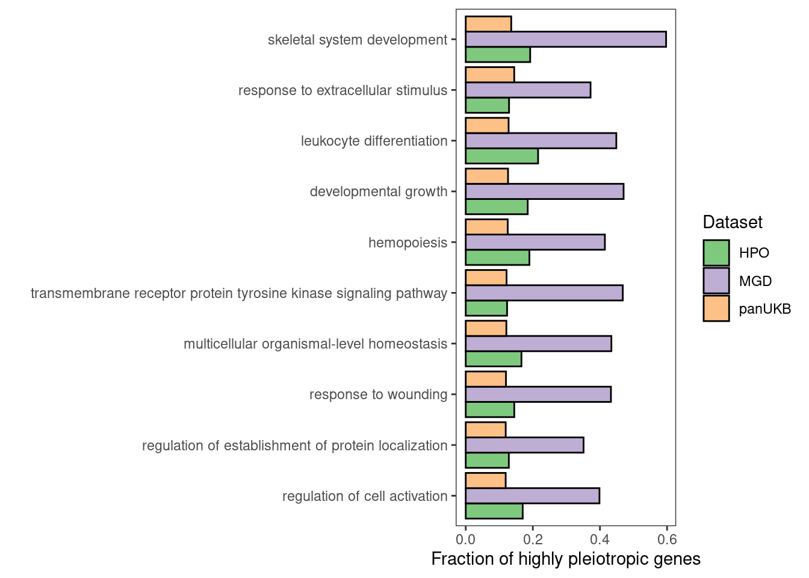
shared_top10_cc <- make_top10_plot(human_cc$df, mouse_cc$df,
puk_cc$df, path_size_cutoff)[1] "ID" "Description" "HPO" "MGD" "panUKB"
[6] "min_perc" print(shared_top10_cc)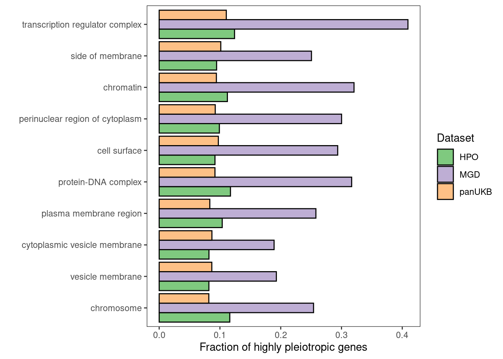
shared_top10_mf <- make_top10_plot(human_mf$df, mouse_mf$df,
puk_mf$df, path_size_cutoff)[1] "ID" "Description" "HPO" "MGD" "panUKB"
[6] "min_perc" print(shared_top10_mf)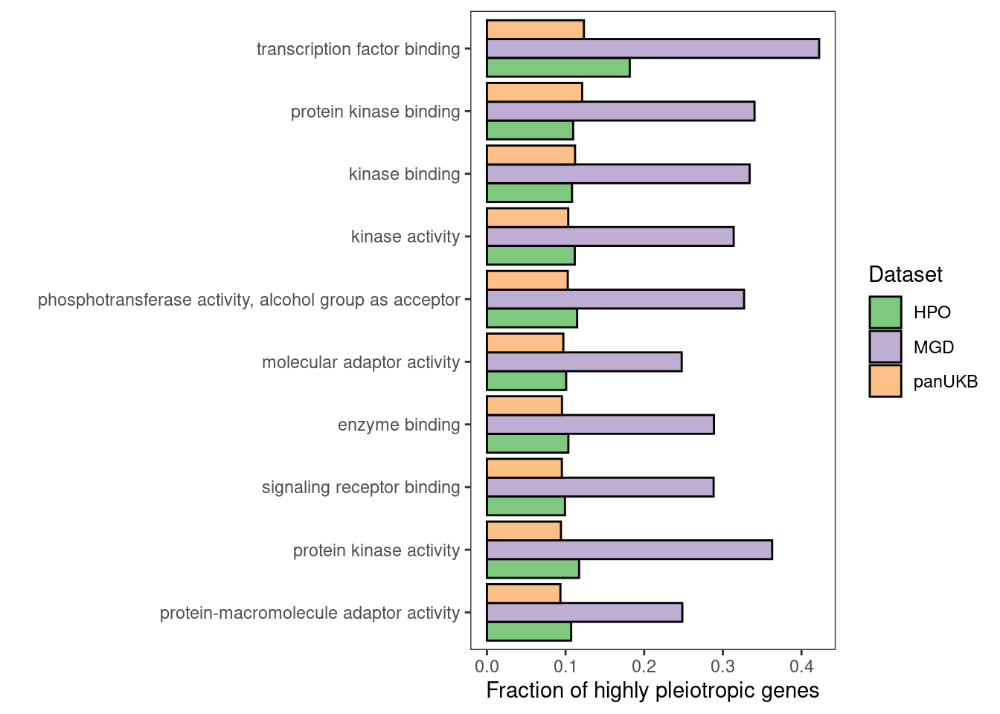
And then we plot a combined figure (as well as an Extended Data Figure) [also excluded from Qmd output]:
# Figure (3? - placement is yet uncertain) - 6 * 8 in portrait
plot_grid(fig3_venns, shared_top10_bp,
labels=c('', 'c'), label_size=20,
nrow=2, rel_heights = c(0.7, 1))# Supplementary Figure wtih CC and MF terms
plot_grid(plot_grid(NULL, shared_top10_cc, nrow=1, labels=c('a', ''),
label_size=20, rel_widths = c(0.3, 1)),
shared_top10_mf, nrow=2,
labels=c('', 'b'), label_size=20)Searching for god pathway examples
In this section, we try to identify GO biological process terms that have the largest percentage of highly pleiotropic genes in all sources, and a substantial contribution from both Mendelian and complex trait data. This requires a bit of manual curation of the dataframe, the examples that are exported have been taken by examining the sorted_bp dataframe.
# Trying to identify a good example BP term
sorted_bp <- bp_sharing$df[order(bp_sharing$df$perc_any,
decreasing = T), ]
export_term_data <- function(term_id) {
target_genes <- human_gotab[human_gotab$GO == term_id, 'SYMBOL']
tqrget_data <- merged_data[merged_data$gene_human %in% target_genes,
c('gene_human', 'pleiotropy_HPO',
'pleiotropy_MGD', 'pleiotropy_panUKB',
'HP_high_count', 'MP_high_count', 'pleio_degree')]
term_descr <- human_bp$df[human_bp$df$ID == term_id, 'Description']
write.table(tqrget_data, file=paste0('./pathway_examples/',
term_id, '_' , term_descr,'.tsv'),
sep='\t', quote=F, row.names = F)
}
export_term_data('GO:0048009')
export_term_data('GO:0007596')
export_term_data('GO:0002062')
export_term_data('GO:0050679')
export_term_data('GO:0035264')
export_term_data('GO:0051216')
export_term_data('GO:0007507')
export_term_data('GO:0001503')Analysis of the natural selection signatures
Finally, we turn to the analysis of natural selection effects for genes in different groups of pleiotropy. There are several major sources of selection statisitcs used in the analysis:
phastCons scores (downloaded from the UCSC Table Browser);
constraint metrics derived from gnomAD (LOEUF and pLI, taken according to gnomAD v.2.1);
iHS scores for the British population (taken from the study by Johson et al., 2018, Nat Ecol Evol) [the choice of GBR as the target population was motivated by similarity to the UKB data];
DRC150 (density of recent coalescent events) according to the study of Palamara et al., 2019, Nat Genet.
Evaluating the relationship between positive and negative selection
Before diving into the analysis of negative and positive selection in the context of pleiotropy, let’s examine if the metrics of positive and negative selection are in any degree of correlation with each other.
# Checking the LOEUF values for genes with higher iHS
merged_data$high_iHS <- (merged_data$IHS_GBR > 4)
ihs_loeuf <- ggplot(merged_data[!(is.na(merged_data$high_iHS)), ],
aes(x=high_iHS, y=oe_lof_upper, fill=high_iHS)) +
geom_violin(scale = "width", col='black') +
geom_boxplot(width=0.2, fill='white', col='black') +
theme_bw()
merged_data$high_drc <- (merged_data$max_drc_150 > 0.0025)
drc_loeuf <- ggplot(merged_data[!(is.na(merged_data$high_drc)), ],
aes(x=high_drc, y=oe_lof_upper, fill=high_drc)) +
geom_violin(scale = "width", col='black') +
geom_boxplot(width=0.2, fill='white', col='black') +
theme_bw()
plot_grid(ihs_loeuf, drc_loeuf, nrow=1)Warning: Removed 6996 rows containing non-finite outside the scale range
(`stat_ydensity()`).Warning: Removed 6996 rows containing non-finite outside the scale range
(`stat_boxplot()`).Warning: Removed 2623 rows containing non-finite outside the scale range
(`stat_ydensity()`).Warning: Removed 2623 rows containing non-finite outside the scale range
(`stat_boxplot()`).
aggregate(gene_human~high_iHS+high_drc, merged_data, length) high_iHS high_drc gene_human
1 FALSE FALSE 9265
2 TRUE FALSE 1387
3 FALSE TRUE 1050
4 TRUE TRUE 176# Metric correlations - LOEUF, DRC, iHS
ihs_hex <- ggplot(merged_data, aes(x=IHS_GBR, y=oe_lof_upper)) +
geom_hex(bins=20)
drc_hex <- ggplot(merged_data, aes(x=max_drc_150, y=oe_lof_upper)) +
geom_hex(bins=20) + scale_x_log10()
plot_grid(ihs_hex, drc_hex, nrow=1)Warning: Removed 12147 rows containing non-finite outside the scale range
(`stat_binhex()`).Warning: Removed 18540 rows containing non-finite outside the scale range
(`stat_binhex()`).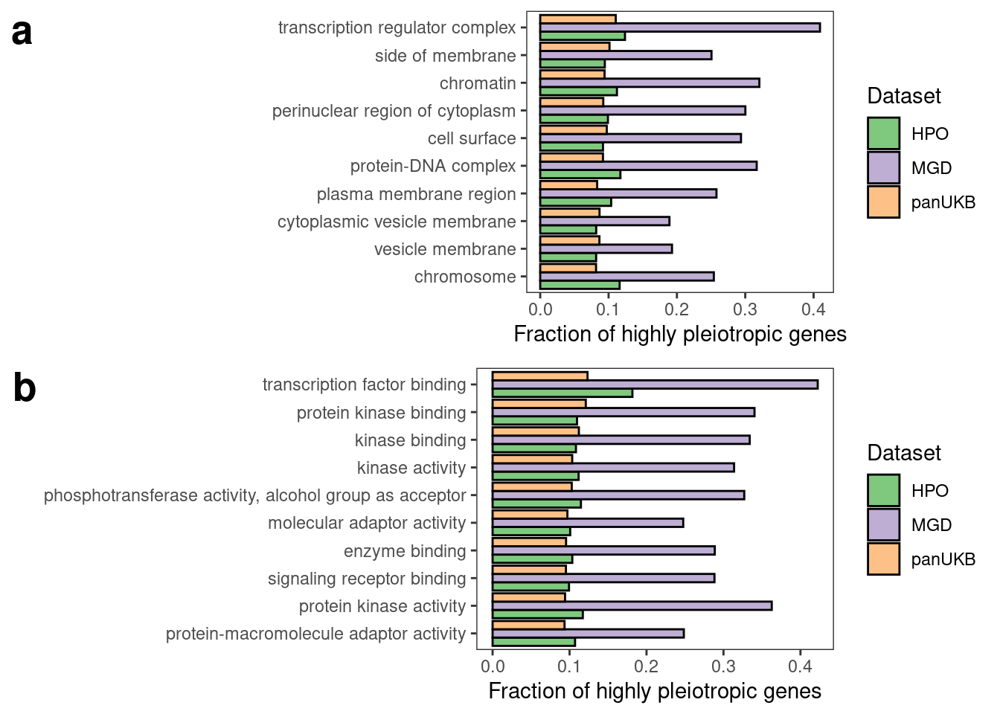
ggplot(merged_data, aes(x=IHS_GBR, y=max_drc_150)) +
geom_hex(bins=20) + scale_y_log10()Warning: Removed 16235 rows containing non-finite outside the scale range
(`stat_binhex()`).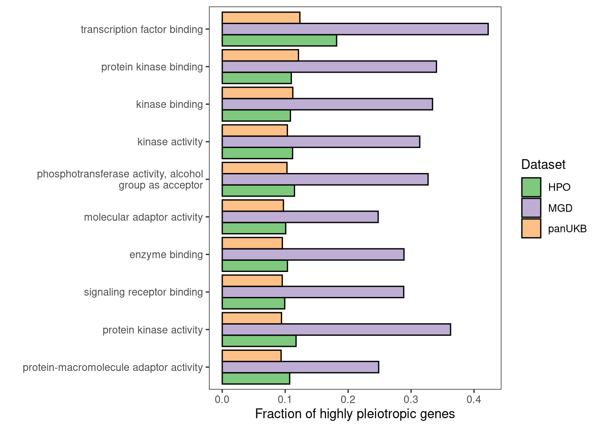
cor.test(merged_data$max_drc_150, merged_data$IHS_GBR,
method='spearman',
use='complete.obs')Warning in cor.test.default(merged_data$max_drc_150, merged_data$IHS_GBR, :
Cannot compute exact p-value with ties
Spearman's rank correlation rho
data: merged_data$max_drc_150 and merged_data$IHS_GBR
S = 2.715e+11, p-value = 0.00231
alternative hypothesis: true rho is not equal to 0
sample estimates:
rho
0.02795688 Single metric analysis
phastCons
We begin by assessing the individual metrics, starting with the pastCons scores.. First, we look into the gene-level phastCons scores (not CDS-averaged).
# Gene-level plots of phastCons, iHS, and DRC150
phastcons_plot <- plot_feature('phast_cons', 'phastCons score', ax_lim = 0.4) group dataset feature pvalue
1 none HPO 0.1126190 NA
2 moderate HPO 0.1226505 4.948109e-02
3 high HPO 0.1266620 7.858874e-04
4 none MGD 0.1163770 NA
5 moderate MGD 0.1205995 1.673716e-01
6 high MGD 0.1277830 6.926334e-06
7 none panUKB 0.1156760 NA
8 moderate panUKB 0.1151310 7.365611e-01
9 high panUKB 0.1139740 2.099319e-01print(phastcons_plot)
phastcons_prop_plot <- plot_feature('phast_cons', 'phastCons score',
cutoff=0.25, cut_name = 'phastCons > 0.25') group dataset no yes
1 none HPO 0.9188192 0.08118081
2 moderate HPO 0.8935658 0.10643416
3 high HPO 0.8771611 0.12283894
4 none MGD 0.9003466 0.09965338
5 moderate MGD 0.8860712 0.11392884
6 high MGD 0.8587418 0.14125820
7 none panUKB 0.9012638 0.09873618
8 moderate panUKB 0.9172553 0.08274470
9 high panUKB 0.9312796 0.06872038
HPO MGD panUKB
0.0684868757 0.0005386491 0.0026462448 print(phastcons_prop_plot)
There are few differences, which is expected given the inclusion of non-coding elements. THe same analysis with CDS is clearer:
table(is.na(merged_data$phastcons_cds))
FALSE TRUE
16353 11760 phastcons_cds_plot <- plot_feature('phastcons_cds', 'phastCons score (CDS)') group dataset feature pvalue
1 none HPO 0.6319786 NA
2 moderate HPO 0.6600213 2.528179e-03
3 high HPO 0.6630846 2.126167e-03
4 none MGD 0.6426310 NA
5 moderate MGD 0.6512887 1.407062e-01
6 high MGD 0.6776440 2.947792e-12
7 none panUKB 0.6419464 NA
8 moderate panUKB 0.6489354 1.407062e-01
9 high panUKB 0.6470419 6.882000e-01print(phastcons_cds_plot)
phastcons_cds_prop_plot <- plot_feature('phastcons_cds', 'phastCons score (CDS)',
cutoff=0.6, cut_name = 'phastCons > 0.6') group dataset no yes
1 none HPO 0.4063745 0.5936255
2 moderate HPO 0.3127169 0.6872831
3 high HPO 0.2909441 0.7090559
4 none MGD 0.3878292 0.6121708
5 moderate MGD 0.3527086 0.6472914
6 high MGD 0.2693523 0.7306477
7 none panUKB 0.3839791 0.6160209
8 moderate panUKB 0.3648352 0.6351648
9 high panUKB 0.3947144 0.6052856
HPO MGD panUKB
5.364246e-04 1.366621e-12 5.638245e-01 print(phastcons_cds_prop_plot)
And then the same using the locus-wise estimates for 100,000 bp loci around an index SNP.
# Locus-level stats (iHS and DRC150) - Figure S9
# Locus-wise phastCons score
phc_locus_plot <- plot_feature('phast_cons', 'phastCons score',
gwas_data_file = 'locus_meanphc.tsv') group dataset feature pvalue
1 none panUKB (locus-wise) 0.1258813 NA
2 moderate panUKB (locus-wise) 0.1280028 0.01025248
3 high panUKB (locus-wise) 0.1244118 0.66994697print(phc_locus_plot)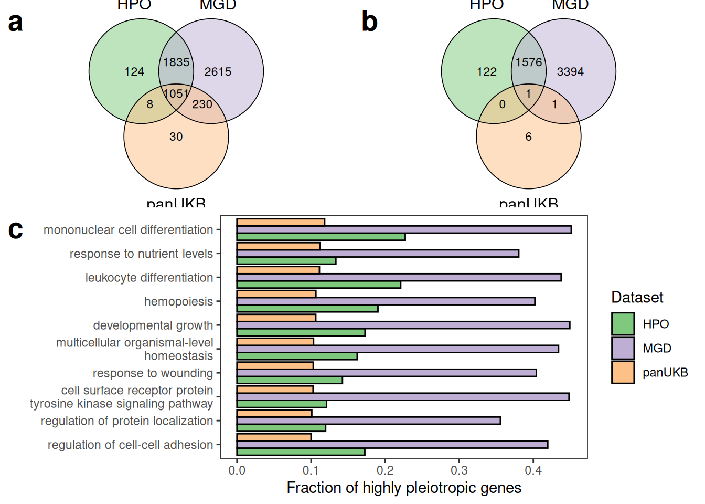
phc_locus_prop_plot <- plot_feature('phast_cons', 'phastCons score',
gwas_data_file = 'locus_meanphc.tsv',
cutoff=0.15, cut_name='phastCons > 0.15') group dataset no yes
1 none panUKB (locus-wise) 0.8014657 0.1985343
2 moderate panUKB (locus-wise) 0.7603383 0.2396617
3 high panUKB (locus-wise) 0.7290640 0.2709360
panUKB (locus-wise)
0.01678535 print(phc_locus_prop_plot)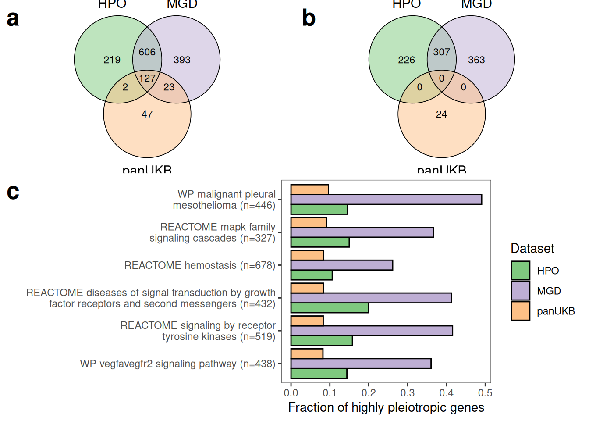
gnomAD gene-level constraint metrics
We continue with the gnomAD metrics - LOEUF, pLI, and missense variant observed-to-expected ratio. Starting with LOEUF (including additional plots for locus-wise and max-indep data).
loeuf_plot <- plot_feature('oe_lof_upper', 'LOEUF') group dataset feature pvalue
1 none HPO 0.9140 NA
2 moderate HPO 0.7010 3.603264e-09
3 high HPO 0.6225 6.098680e-15
4 none MGD 0.8955 NA
5 moderate MGD 0.7700 3.084817e-11
6 high MGD 0.5220 2.818897e-72
7 none panUKB 0.7680 NA
8 moderate panUKB 0.6850 1.493969e-04
9 high panUKB 0.6340 1.116080e-09print(loeuf_plot)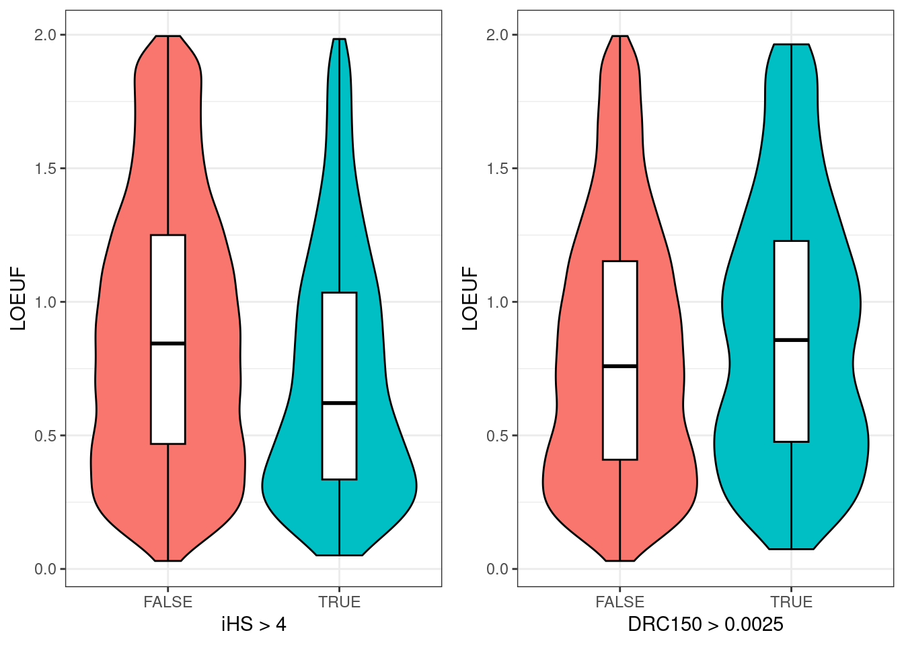
# For maxindep
loeuf_plot_mi <- plot_feature('oe_lof_upper', 'LOEUF',
use_maxindep = TRUE) group dataset feature pvalue
1 none panUKB 0.768 NA
2 moderate panUKB 0.685 1.991959e-04
3 high panUKB 0.634 2.976214e-09
4 none panUKB_maxindep 0.732 NA
5 moderate panUKB_maxindep 0.742 6.988851e-01
6 high panUKB_maxindep 0.619 1.242124e-04print(loeuf_plot_mi)
loeuf_plot_lw <- plot_feature('oe_lof_upper', 'LOEUF',
use_locuswide = TRUE) group dataset feature pvalue
1 none panUKB 0.7680 NA
2 moderate panUKB 0.6850 2.987939e-04
3 high panUKB 0.6340 2.976214e-09
4 none panUKB_all 0.8725 NA
5 moderate panUKB_all 0.8520 3.944297e-02
6 high panUKB_all 0.8025 1.238052e-03print(loeuf_plot_lw)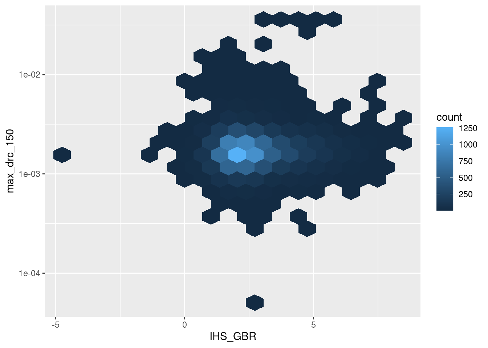
Exporting the SN figures with all gene-level properties [as usuual, we hide the output from the Qmd].
# Figure SN2.2
plot_grid(count_plot_lw, ppi_plot_lw, gobp_plot_lw, loeuf_plot_lw,
nrow=2, labels=c('a', 'b', 'c', 'd'), label_size=20)# Figure SN3.2
plot_grid(count_plot_mi, ppi_plot_mi, gobp_plot_mi, loeuf_plot_mi,
nrow=2, labels=c('a', 'b', 'c', 'd'), label_size=20)Next, we consider pLI and missense Z-score. Given the binary tendency of pLI, we also try to do the analysis by splitting genes into tolerant and intolerant.
pli_plot <- plot_feature('pLI', 'pLI') group dataset feature pvalue
1 none HPO 0.00001073 NA
2 moderate HPO 0.00407580 3.183604e-08
3 high HPO 0.01399150 5.155383e-09
4 none MGD 0.00027267 NA
5 moderate MGD 0.00263920 6.900677e-08
6 high MGD 0.21890000 2.457579e-45
7 none panUKB 0.00285660 NA
8 moderate panUKB 0.00795720 5.985650e-02
9 high panUKB 0.01156800 9.359437e-03print(pli_plot)
pli_prop_plot <- plot_feature('pLI', 'pLI', cutoff=0.9, cut_name = "pLI > 0.9") group dataset no yes
1 none HPO 0.8517110 0.1482890
2 moderate HPO 0.7674767 0.2325233
3 high HPO 0.7036364 0.2963636
4 none MGD 0.8679577 0.1320423
5 moderate MGD 0.8067109 0.1932891
6 high MGD 0.6680786 0.3319214
7 none panUKB 0.8062084 0.1937916
8 moderate panUKB 0.7591565 0.2408435
9 high panUKB 0.7368421 0.2631579
HPO MGD panUKB
1.632317e-06 2.096110e-36 4.033743e-06 print(pli_prop_plot)
missense_plot <- plot_feature('mis_z', 'Missense z-score') group dataset feature pvalue
1 none HPO 0.486640 NA
2 moderate HPO 0.851550 4.167020e-07
3 high HPO 1.028000 2.815733e-09
4 none MGD 0.728450 NA
5 moderate MGD 0.800410 2.934358e-03
6 high MGD 1.200550 3.774132e-29
7 none panUKB 0.791660 NA
8 moderate panUKB 0.933140 1.141033e-02
9 high panUKB 0.994775 2.819876e-04print(missense_plot)Warning: Removed 3833 rows containing non-finite outside the scale range
(`stat_ydensity()`).Warning: Removed 3833 rows containing non-finite outside the scale range
(`stat_boxplot()`).Exporting extended data figure:
# Extended Figure 11
plot_grid(pli_plot, missense_plot, nrow=2, labels=c('a', 'b'), label_size=20)Warning: Removed 3833 rows containing non-finite outside the scale range
(`stat_ydensity()`).Warning: Removed 3833 rows containing non-finite outside the scale range
(`stat_boxplot()`).Positive selection metrics
We begin with iHS values (gene-wise comes first).
ihs_plot <- plot_feature('IHS_GBR', 'iHS score') group dataset feature pvalue
1 none HPO 2.1600 NA
2 moderate HPO 2.2035 4.604508e-01
3 high HPO 2.1705 8.593415e-01
4 none MGD 2.1135 NA
5 moderate MGD 2.1340 7.842225e-02
6 high MGD 2.3270 9.274244e-09
7 none panUKB 2.1280 NA
8 moderate panUKB 2.3325 8.003359e-07
9 high panUKB 2.4440 1.464951e-20print(ihs_plot)Warning: Removed 79 rows containing non-finite outside the scale range
(`stat_ydensity()`).Warning: Removed 79 rows containing non-finite outside the scale range
(`stat_boxplot()`).
ihs_prop_plot <- plot_feature('IHS_GBR', 'iHS score',
cutoff=4, cut_name='iHS > 4') group dataset no yes
1 none HPO 0.9051383 0.09486166
2 moderate HPO 0.8928791 0.10712093
3 high HPO 0.8925234 0.10747664
4 none MGD 0.9236842 0.07631579
5 moderate MGD 0.8990601 0.10093987
6 high MGD 0.8786693 0.12133072
7 none panUKB 0.9025352 0.09746479
8 moderate panUKB 0.8839009 0.11609907
9 high panUKB 0.8548708 0.14512922
HPO MGD panUKB
6.351486e-01 5.728520e-05 1.085217e-06 print(ihs_prop_plot)
# Attempting other iHS cutoffs
plot_feature('IHS_GBR', 'iHS score', cutoff=5, cut_name='iHS > 5') group dataset no yes
1 none HPO 0.9644269 0.03557312
2 moderate HPO 0.9600982 0.03990178
3 high HPO 0.9672897 0.03271028
4 none MGD 0.9780702 0.02192982
5 moderate MGD 0.9611175 0.03888245
6 high MGD 0.9561644 0.04383562
7 none panUKB 0.9645070 0.03549296
8 moderate panUKB 0.9582043 0.04179567
9 high panUKB 0.9483101 0.05168986
HPO MGD panUKB
0.973317832 0.001573642 0.009291383 
plot_feature('IHS_GBR', 'iHS score', cutoff=6, cut_name='iHS > 6')Warning in chisq.test(ds_df$feature): Chi-squared approximation may be
incorrect group dataset no yes
1 none HPO 0.9881423 0.011857708
2 moderate HPO 0.9892572 0.010742787
3 high HPO 0.9934579 0.006542056
4 none MGD 0.9956140 0.004385965
5 moderate MGD 0.9902150 0.009784988
6 high MGD 0.9866928 0.013307241
7 none panUKB 0.9915493 0.008450704
8 moderate panUKB 0.9922601 0.007739938
9 high panUKB 0.9874089 0.012591120
HPO MGD panUKB
0.63525275 0.02280088 0.22292246 
And then proceeding to the DRC150 (also in a gene-wise manner):
drc_plot <- plot_feature('max_drc_150', 'DRC150 score', log_scale=TRUE)Scale for y is already present.
Adding another scale for y, which will replace the existing scale. group dataset feature pvalue
1 none HPO 0.001626550 NA
2 moderate HPO 0.001700115 5.584576e-01
3 high HPO 0.001685855 6.718877e-01
4 none MGD 0.001691360 NA
5 moderate MGD 0.001670390 7.838812e-01
6 high MGD 0.001675820 7.838812e-01
7 none panUKB 0.001681470 NA
8 moderate panUKB 0.001745460 8.617103e-03
9 high panUKB 0.001798020 1.856129e-08print(drc_plot)
drc_prop_plot <- plot_feature('max_drc_150', 'DRC150 score',
cutoff=0.0025, cut_name='DRC150 > 0.0025') group dataset no yes
1 none HPO 0.8852459 0.11475410
2 moderate HPO 0.8946360 0.10536398
3 high HPO 0.8782991 0.12170088
4 none MGD 0.9069424 0.09305761
5 moderate MGD 0.9000000 0.10000000
6 high MGD 0.8991031 0.10089686
7 none panUKB 0.8968289 0.10317106
8 moderate panUKB 0.8600000 0.14000000
9 high panUKB 0.8302387 0.16976127
HPO MGD panUKB
8.976905e-01 6.125089e-01 4.908649e-08 print(drc_prop_plot)
As Frachon et al., 2017, Nat Ecol Evol, as well as some other sources, argue that only a moderate pleiotropy degree should be adaptive, we next check what happens in the high pleiotropy part of the distribution.
# High pleiotropy check
sum(merged_data$pleio_degree > 7, na.rm=TRUE)[1] 168sum(merged_data[merged_data$pleio_degree > 7, 'max_drc_150'] > 0.0025, na.rm = TRUE)[1] 32sum(merged_data$pleio_degree > 10, na.rm=TRUE)[1] 64sum(merged_data[merged_data$pleio_degree > 10, 'max_drc_150'] > 0.0025, na.rm = TRUE)[1] 14And then exporting the final Figure 3 and a corresponding Extended Data Figure:
# Figure 4 --- 8 * 8 (portrait)
plot_grid(phastcons_cds_plot, loeuf_plot, # phastcons_plot,
plot_grid(ihs_prop_plot, drc_prop_plot, nrow=1,
labels=c('c', 'd'), label_size=20),
nrow=3, labels=c('a', 'b', ''), label_size=20,
rel_heights = c(0.62, 0.62, 1))# Figure S10
plot_grid(ihs_plot, drc_plot, nrow=2, labels=c('a', 'b'), label_size=24)Warning: Removed 79 rows containing non-finite outside the scale range
(`stat_ydensity()`).Warning: Removed 79 rows containing non-finite outside the scale range
(`stat_boxplot()`).Finally, we plot the locus-wise iHS and DRC150 values.
ihs_locus_plot <- plot_feature('IHS_GBR', 'iHS score',
gwas_data_file = 'locus_maxihs.tsv') group dataset feature pvalue
1 none panUKB (locus-wise) 2.7460 NA
2 moderate panUKB (locus-wise) 2.6185 5.335433e-05
3 high panUKB (locus-wise) 2.7030 1.789785e-01print(ihs_locus_plot)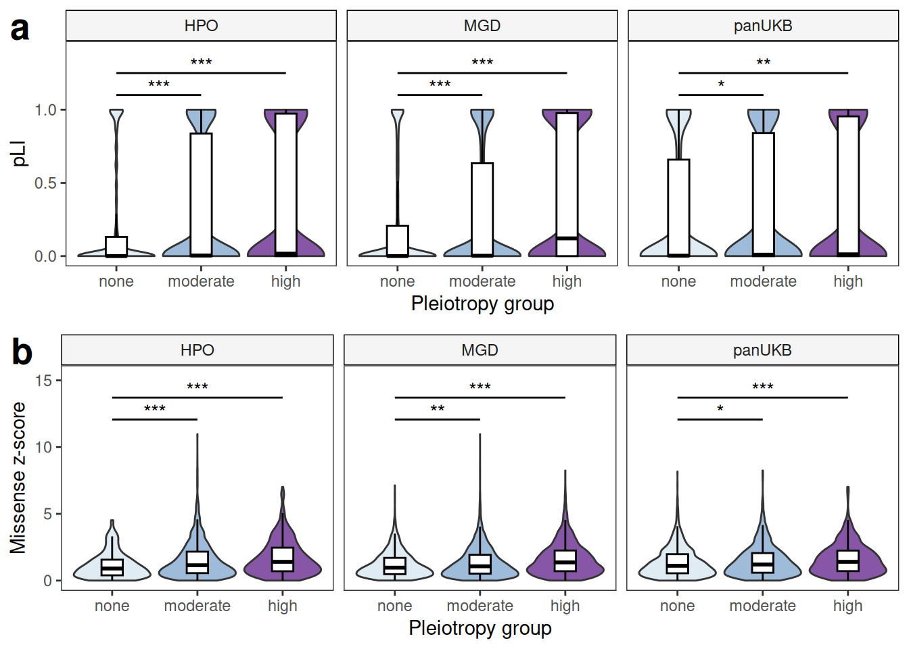
ihs_locus_prop_plot <- plot_feature('IHS_GBR', 'iHS score',
gwas_data_file = 'locus_maxihs.tsv',
cutoff=4, cut_name='iHS > 4') group dataset no yes
1 none panUKB (locus-wise) 0.8206339 0.1793661
2 moderate panUKB (locus-wise) 0.8576850 0.1423150
3 high panUKB (locus-wise) 0.8643216 0.1356784
panUKB (locus-wise)
0.1419814 print(ihs_locus_prop_plot)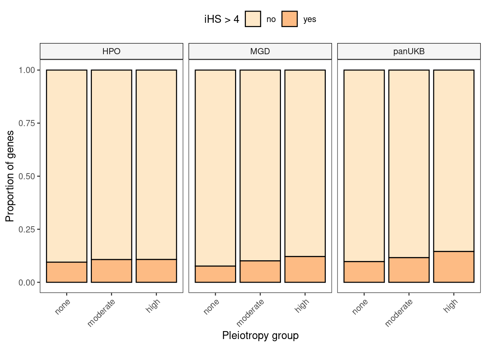
# Locus-wise DRC150 value
drc_locus_plot <- plot_feature('max_drc_150', 'DRC150 score', log_scale=TRUE,
gwas_data_file = 'locus_maxdrc.tsv')Scale for y is already present.
Adding another scale for y, which will replace the existing scale. group dataset feature pvalue
1 none panUKB (locus-wise) 0.001697295 NA
2 moderate panUKB (locus-wise) 0.001746545 3.486651e-03
3 high panUKB (locus-wise) 0.001968565 7.192445e-10print(drc_locus_plot)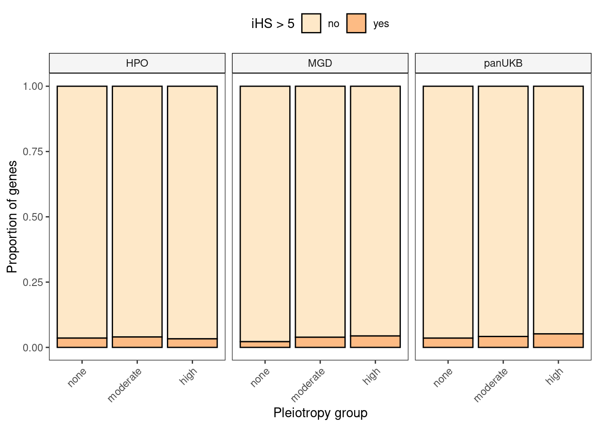
drc_locus_prop_plot <- plot_feature('max_drc_150', 'DRC150',
gwas_data_file = 'locus_maxdrc.tsv',
cutoff=0.0025, cut_name='DRC150 > 0.0025') group dataset no yes
1 none panUKB (locus-wise) 0.8947955 0.1052045
2 moderate panUKB (locus-wise) 0.8625541 0.1374459
3 high panUKB (locus-wise) 0.6607143 0.3392857
panUKB (locus-wise)
2.986261e-19 print(drc_locus_prop_plot)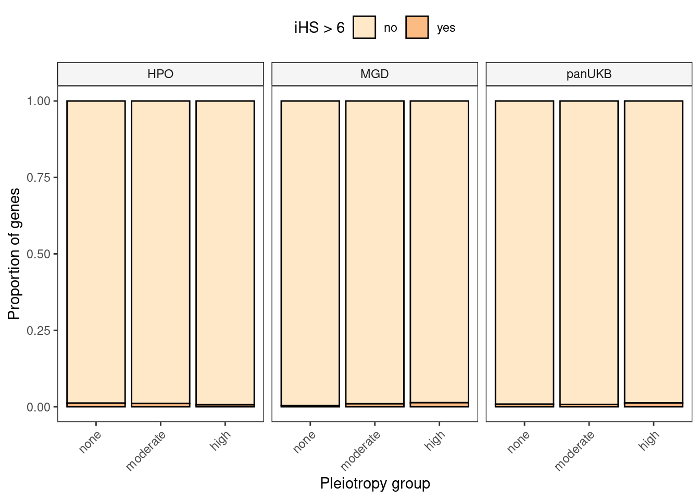
And plotting the extended data figure with the locus-wise positive and negative selection estimates.
# Figure S9
plot_grid(phc_locus_plot, ihs_locus_plot, drc_locus_plot,
phc_locus_prop_plot, ihs_locus_prop_plot, drc_locus_prop_plot,
nrow=2, labels=c('a', 'b', 'c', 'd', 'e', 'f'), label_size=20,
rel_heights = c(0.7, 1))Bidirectional selection
As a final step of our analysis pipeline, we look into the overlap of the negative and positive selection signals at highly pleiotropic loci.
# Overlapping signatures (based on iHS)
merged_data$bidirectional <- as.numeric(merged_data$IHS_GBR > 4 &
merged_data$oe_lof_upper < 0.6)
table(merged_data$bidirectional)
0 1
22370 730 sum(merged_data$bidirectional, na.rm=T)/length(na.omit(merged_data$bidirectional))[1] 0.03160173bidir_ihs <- plot_feature('bidirectional', '', cutoff=0.5,
cut_name='Bidirectional?') group dataset no yes
1 none HPO 0.9578544 0.04214559
2 moderate HPO 0.9402223 0.05977771
3 high HPO 0.9387569 0.06124314
4 none MGD 0.9662630 0.03373702
5 moderate MGD 0.9494489 0.05055112
6 high MGD 0.9190550 0.08094500
7 none panUKB 0.9681218 0.03187823
8 moderate panUKB 0.9542226 0.04577743
9 high panUKB 0.9296346 0.07036536
HPO MGD panUKB
2.972458e-01 1.231435e-07 1.835683e-09 # Overlapping signatures (based on DRC150)
merged_data$bidirectional_b <- as.numeric(merged_data$max_drc_150 > 0.0025 &
merged_data$oe_lof_upper < 0.6)
table(merged_data$bidirectional_b)
0 1
16536 359 sum(merged_data$bidirectional_b, na.rm=T)/length(na.omit(merged_data$bidirectional_b))[1] 0.02124889bidir_drc <- plot_feature('bidirectional_b', '', cutoff=0.5,
cut_name='Bidirectional?') group dataset no yes
1 none HPO 0.9836066 0.01639344
2 moderate HPO 0.9672245 0.03277545
3 high HPO 0.9515086 0.04849138
4 none MGD 0.9844055 0.01559454
5 moderate MGD 0.9747690 0.02523104
6 high MGD 0.9456275 0.05437245
7 none panUKB 0.9790007 0.02099928
8 moderate panUKB 0.9662813 0.03371869
9 high panUKB 0.9449253 0.05507474
HPO MGD panUKB
4.042914e-02 5.214400e-07 1.718220e-08 # Figure S10
plot_grid(bidir_ihs, bidir_drc, nrow=1, labels=c('a', 'b'), label_size = 20)